<!doctype html>
<html lang="en">
<head>
  <meta charset="utf-8">
  <meta name="viewport" content="width=device-width, initial-scale=1">
  <title>arxiv digest — 2026-07-23</title>
  <style>
:root {
  --bg: #ffffff;
  --fg: #1f2328;
  --muted: #59636e;
  --border: #d0d7de;
  --card: #f6f8fa;
  --link: #0969da;
}
body {
  max-width: 980px;
  margin: 0 auto;
  padding: 2rem 1rem 5rem;
  font-family: -apple-system, BlinkMacSystemFont, "Segoe UI", Helvetica, Arial, sans-serif;
  line-height: 1.55;
  color: var(--fg);
  background: var(--bg);
}
a { color: var(--link); }
img { max-width: 100%; height: auto; }
pre, code { background: var(--card); border-radius: 6px; }
pre { padding: 1rem; overflow-x: auto; }
blockquote { border-left: 4px solid var(--border); padding-left: 1rem; color: var(--muted); }
details { margin: 0.6rem 0; }
summary { cursor: pointer; font-weight: 600; }
.paper-figures-scroll {
  display: flex;
  gap: 1rem;
  overflow-x: auto;
  overscroll-behavior-x: contain;
  padding: 0.75rem 0.25rem 1rem;
  margin: 1rem 0 1.25rem;
  border-top: 1px solid var(--border);
  border-bottom: 1px solid var(--border);
  scroll-snap-type: x proximity;
}
.paper-figure-card {
  flex: 0 0 min(260px, 72vw);
  scroll-snap-align: start;
  background: var(--card);
  border: 1px solid var(--border);
  border-radius: 12px;
  padding: 0.55rem;
}
.paper-figure-card img {
  display: block;
  width: 100%;
  max-height: 240px;
  object-fit: contain;
  background: white;
  border-radius: 8px;
}
.paper-figure-caption {
  display: block;
  margin-top: 0.5rem;
  color: var(--muted);
  font-size: 0.85rem;
}
.figure-strip-hint {
  color: var(--muted);
  font-size: 0.9rem;
  margin-bottom: -0.3rem;
}
</style>
  <!-- MathJax: renders $...$ inline math and $$...$$ display math, plus
       \(...\) and \[...\]. Loaded from the official CDN; works offline
       once cached. Configured to skip code/pre blocks so arxiv IDs that
       look like dollar amounts don't get mangled. -->
  <script>
    window.MathJax = {
      tex: {
        inlineMath: [['$', '$'], ['\\(', '\\)']],
        displayMath: [['$$', '$$'], ['\\[', '\\]']],
        processEscapes: true,
        processEnvironments: true
      },
      options: {
        skipHtmlTags: ['script', 'noscript', 'style', 'textarea', 'pre', 'code'],
        ignoreHtmlClass: 'tex2jax_ignore',
        processHtmlClass: 'tex2jax_process'
      }
    };
  </script>
  <script id="MathJax-script" async
    src="https://cdn.jsdelivr.net/npm/mathjax@3/es5/tex-chtml.js"></script>
</head>
<body>
<header style="background-color: #333; color: white; padding: 15px; margin-bottom: 20px;">
  <h1 style="margin: 0; font-size: 24px;">
    <a href="https://ochelpan.github.io/arXiv_clean/" style="color: white; text-decoration: none;">Main</a>
  </h1>
</header>

<h1>Daily arXiv Report</h1>

<hr>
<p>
<a href="index.html">← Index</a>
 · <a href="papers_04.html">← Previous</a> · <a href="papers_06.html">Next →</a>
</p>
<hr>

<h2>Papers 81–100</h2>
<p><a id="paper-2607.18477"></a></p>
<h3 id="theory-of-two-dimensional-wigner-crystals-with-defects-interactions-melting-transitions-and-collective-modes"><a href="http://arxiv.org/abs/2607.18477v1">Theory of two-dimensional Wigner crystals with defects: Interactions, melting transitions and collective modes</a></h3>
<p><strong>Authors:</strong> Paweł Matus, Tobias Holder<br>
<strong>Type:</strong> theory · <strong>Category:</strong> strongly correlated electrons · <strong>PDF:</strong> <a href="https://arxiv.org/pdf/2607.18477v1">https://arxiv.org/pdf/2607.18477v1</a><br>
<strong>Analysis basis:</strong> full PDF text, analyzed in chunks
<strong>Topic relevance:</strong> <code>Frenkel-Kontorova</code> <strong>1/5</strong> · <code>Keldysh / 2PI / non-Gaussian methods</code> <strong>1/5</strong> · <code>analog quantum simulation</code> <strong>1/5</strong></p>
<div class="figure-strip-hint">↔ Scroll figures horizontally</div>
<div class="paper-figures-scroll">
<figure class="paper-figure-card">
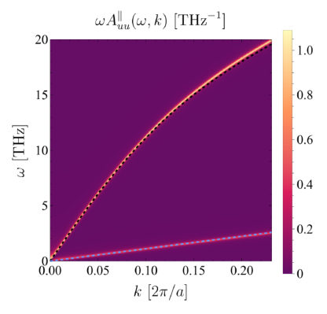
<figcaption class="paper-figure-caption"><b>Fig 1.</b> Figure 2. Spectral function of the longitudinal mode u ∥k at ρv = 0.06n0. The spectral function is defined as A∥ uu(ω) = −π−1Im[G∥ uu(ω −iγ)], where G∥(ω) is the Green’s function matrix for the longitudinal u ∥k sector of the action (43) and γ is the imaginary part of the self energy. To illustrate the relative spectral weight of the two modes, we set a constant γ = 1011 Hz. The thin black dashed line follows ωplasm(k), and the think blue dashed line follows ωph(k) in Eq. (44). We stress that the quasiparticle decay rate γ is chosen arbitrarily, but the spectral weight of the modes does not depend on γ. In particular, we do not consider the particle-hole continuum effects.</figcaption>
</figure>
<figure class="paper-figure-card">
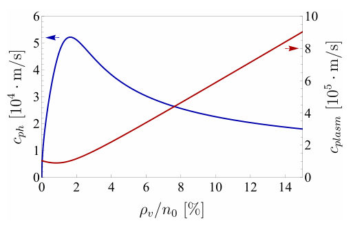
<figcaption class="paper-figure-caption"><b>Fig 2.</b> Figure 3. The speed of sound of the two modes in Eq. (44) for k ≪d−1 as a function of the relative density of holes, ν = ρv/n0. Note the different scales on the y-axes.</figcaption>
</figure>
</div>

<p><strong>Summary.</strong> This work develops a sophisticated theoretical framework using elasticity-gauge duality to model two-dimensional Wigner crystals containing various lattice defects. It systematically calculates defect interaction energies and analyzes how the presence of vacancies modifies collective excitations like phonons. The results offer measurable predictions for transport properties, linking measurements of sound speed directly to vacancy density.</p>
<p><strong>Why it may be interesting.</strong> While focused on solid-state correlations, the development of 'fracton-elasticity duality' provides powerful mathematical tools for analyzing systems where long-range interactions couple to topological defects, which has parallels in quantum field theory applied to condensed matter.</p>
<details>
<summary>Detailed structure</summary>
<p><strong>Main problem.</strong> To systematically study how various lattice defects (vacancies, dislocations, disclinations) affect the effective action, interaction energies, and melting transitions of two-dimensional Wigner crystals.</p>
<p><strong>Main result.</strong> The theory provides a comprehensive framework using duality techniques to calculate defect interactions and predicts unusual phonon dispersion relations in the metallic vacancy liquid phase. This framework is applicable to other charged systems like CDWs.</p>
<p><strong>Method.</strong> Duality techniques, specifically elasticity-gauge duality, are employed to construct an effective action incorporating elastic and electrostatic contributions from various lattice defects.</p>
<p><strong>Model / system.</strong> The system is a two-dimensional Wigner solid (electron gas) confined between metallic gates. The model incorporates the interaction of electrons with vacancies ($
ho_{vac}$) and treats defects as sources for electromagnetic and elastic gauge fields.</p>
<p><strong>Key observables.</strong> Phonon dispersion relation, speed of sound ($c_{ph}$), interaction energies between defect pairs, and melting temperature dependence on vacancy density.</p>
<p><strong>Important parameters / regimes.</strong> Vacancy density ($
ho_v$), gate separation ($d$), lattice constant ($a$), and the effective mass/density of the vacancy fluid ($m_h$).</p>
<p><strong>Assumptions / limitations.</strong> The analysis uses linear response theory, assumes parabolic dispersion for the Fermi liquid component, and often simplifies by neglecting spin degrees of freedom or assuming infinite bulk elastic moduli for certain limits.</p>
<p><strong>Figures summary.</strong> Figure 1 illustrates the fundamental types of lattice defects: vacancies, dislocations (with Burgers vector $\mathbf{b}$), and disclinations (with Frank vector $\mathbf{F}$).</p>
<p><strong>Paper structure.</strong> The paper builds from defining the general quadratic action incorporating elasticity and electrostatics. It then uses duality transformations to derive a dual action describing defect physics. Subsequent sections analyze specific observables like interaction energies, collective modes (phonons/plasmons), and the dynamics of the vacancy Fermi liquid.</p>
</details>
<details>
<summary>Abstract</summary>
<p>The physics of Wigner solids is characterized by an interplay of elasticity and long-range electrostatics, endowing crystal defects with properties distinct from those in charge-neutral crystals. Recent experiments observing lattice melting and Wigner-crystal-adjacent phases in two dimensions necessitate an examination of how defects affect the long-wavelength properties of such solids. Here, we use duality techniques to construct a comprehensive framework for studying the contribution of vacancies and interstitials, dislocations, and disclinations to the effective action of two-dimensional charged crystals. This allows for a systematic investigation of the interaction energies for the different combinations of defect pairs. We further study melting transitions due to defect proliferation, assessing and justifying some of the assumptions present in the literature. In the metallic Wigner crystal phase, characterized by a finite ground state density of vacancies, we find phonons with a dispersion relation that varies in an unusual way with the vacancy density. Consequently, we discuss how thermodynamic properties of such a vacancy Fermi liquid can be probed in measurements of the melting temperature and speed of sound. The field theory developed here can serve as a starting point in the study of anomalous Hall crystals and charge density waves with defects.</p>
</details>
<p><sub><a href="#top">↑ back to top</a></sub></p>

<p><a id="paper-2607.18769"></a></p>
<h3 id="conductivity-of-the-landau-levels-of-two-dimensional-dirac-cones-and-gapped-nodal-rings-in-the-quantum-limit-under-impurity-potentials"><a href="http://arxiv.org/abs/2607.18769v1">Conductivity of the Landau levels of two-dimensional Dirac cones and gapped nodal-rings in the quantum limit under impurity-potentials</a></h3>
<p><strong>Authors:</strong> Ipsita Mandal, Sanskar Sharma<br>
<strong>Type:</strong> theory · <strong>Category:</strong> disordered systems and neural networks · <strong>PDF:</strong> <a href="https://arxiv.org/pdf/2607.18769v1">https://arxiv.org/pdf/2607.18769v1</a><br>
<strong>Analysis basis:</strong> full PDF text, analyzed in chunks
<strong>Topic relevance:</strong> <code>Keldysh / 2PI / non-Gaussian methods</code> <strong>1/5</strong> · <code>Kondo &amp; dissipative impurity</code> <strong>1/5</strong></p>
<div class="figure-strip-hint">↔ Scroll figures horizontally</div>
<div class="paper-figures-scroll">
<figure class="paper-figure-card">
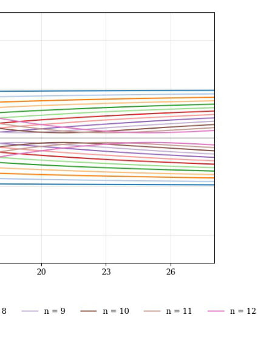
<figcaption class="paper-figure-caption"><b>Fig 1.</b> FIG. 1. LLs of GNR as functions of ρ, setting m∗= 1.0, εr = 3.0, and ∆= 0.9.</figcaption>
</figure>
<figure class="paper-figure-card">
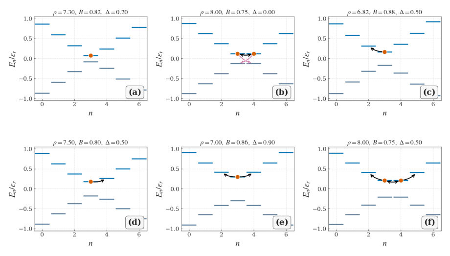
<figcaption class="paper-figure-caption"><b>Fig 2.</b> FIG. 2. Schematics illustrating the selection rules of Secs. IV B 1—IV B 4. The staircase patterns in each subfigure displays the LL spectrum as a function of n, with the orange dot indicating the LLL(s). (a) Case 1 of Sec. IV B 1: vv selection rule kills all terms. (b) Case 2 of Sec. IV B 1: pairing among the doubly-degenerate LLLs and with the neighbouring LLs (in the hole-branch) are shown via solid black (intraband, + ↔+) and dashed purple(interband, + ↔−) arrows, respectively. (c) Case 1 of Sec. IV B 2: neighboring LL is ng −1, indicated by the black arrow. (d) Case 2 of Sec. IV B 2: neighboring LL is ng + 1, indicated by the black arrow. (e) Sec. IV B 3: neighbouring LLs ng −1 and ng...</figcaption>
</figure>
<figure class="paper-figure-card">
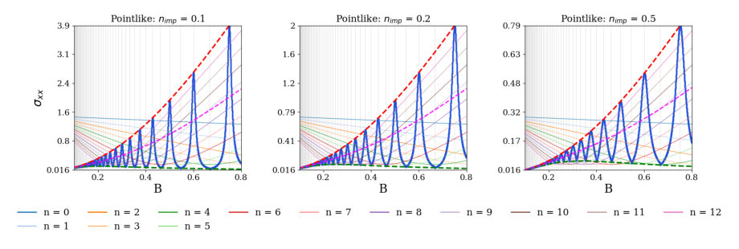
<figcaption class="paper-figure-caption"><b>Fig 3.</b> FIG. 3. GNR: σql xx (in blue) versus B for the pointlike impurity-potential. Here, we have used m∗= 1.0, εr = 3.0, and ∆= 0.9. The coloured lines in the background show the LLs (with n ∈[1, 12]) as functions of B. The grey vertical lines mark the B-values where ρ = 2 N. The dashed red and green curves indicate the upper and lower envelopes of the oscillating blue curves, which are derived by interpolating the local maxima and minima of the latter. We have also indicated the average values via the dashed magenta curves.</figcaption>
</figure>
<figure class="paper-figure-card">
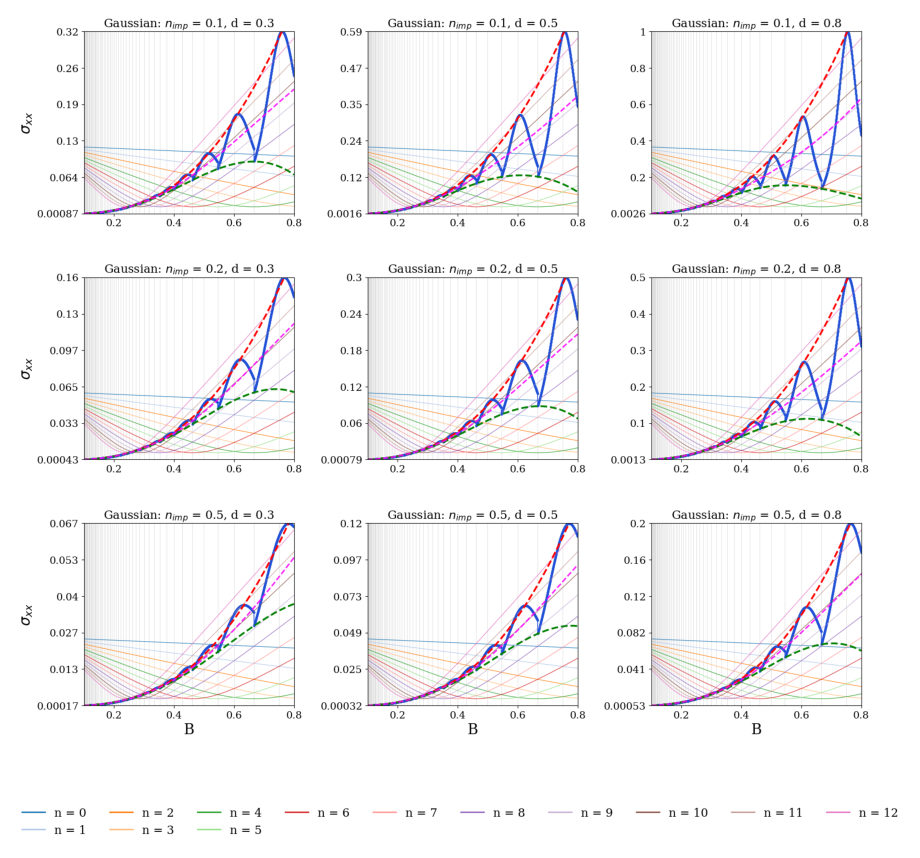
<figcaption class="paper-figure-caption"><b>Fig 4.</b> FIG. 4. GNR: σql xx (in blue) versus B for the Gaussian impurity-potential. Here, we have used m∗= 1.0, εr = 3.0, and ∆= 0.9. The coloured lines in the background show the LLs (with n ∈[1, 12]) as functions of B. The grey vertical lines mark the B-values where ρ = 2 N. The dashed red and green curves indicate the upper and lower envelopes of the oscillating blue curves, which are derived by interpolating the local maxima and minima of the latter. We have also indicated the average values via the dashed magenta curves.</figcaption>
</figure>
<figure class="paper-figure-card">
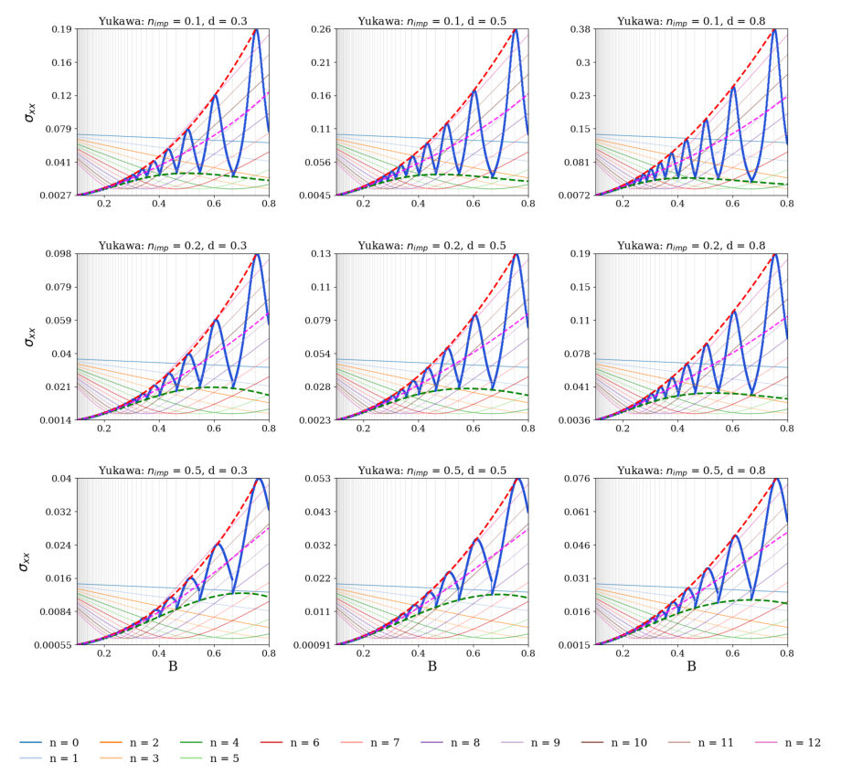
<figcaption class="paper-figure-caption"><b>Fig 5.</b> FIG. 5. GNR: σql xx (in blue) versus B for the Yukawa impurity-potential. Here, we have used m∗= 1.0, εr = 3.0, and ∆= 0.9. The coloured lines in the background show the LLs (with n ∈[1, 12]) as functions of B. The grey vertical lines mark the B-values where ρ = 2 N. The dashed red and green curves indicate the upper and lower envelopes of the oscillating blue curves, which are derived by interpolating the local maxima and minima of the latter. We have also indicated the average values via the dashed magenta curves.</figcaption>
</figure>
</div>

<p><strong>Summary.</strong> This work theoretically distinguishes the magnetotransport properties of 2D Dirac cones from those of gapped nodal-rings (GNRs) in the presence of impurities and strong magnetic fields. By applying the Kubo-Bastin formalism, the authors predict that GNRs will exhibit pronounced oscillatory behavior in both longitudinal and Hall conductivities, a signature absent in the smoothly varying response of 2D Dirac cones.</p>
<p><strong>Why it may be interesting.</strong> The clear differentiation of transport fingerprints between two distinct topological/band structures (Dirac vs. GNR) under disorder provides a powerful theoretical tool to interpret complex magnetotransport experiments in condensed matter systems.</p>
<details>
<summary>Detailed structure</summary>
<p><strong>Main problem.</strong> The study investigates the dc magnetoconductivity of two-dimensional Dirac cones and gapped nodal-rings (GNRs) when subjected to perpendicular magnetic fields and impurity potentials in the quantum limit.</p>
<p><strong>Main result.</strong> The GNR exhibits distinct oscillatory transport signatures, including resonant peaks in $\sigma_{xx}$ and a sawtooth pattern in $\sigma_{xy}$, contrasting sharply with the smooth, monotonic magnetoresistivity found for 2D Dirac cones.</p>
<p><strong>Method.</strong> The Kubo-Bastin formalism is employed to calculate transport coefficients by analyzing the Landau level spectrum derived from the respective Hamiltonians.</p>
<p><strong>Model / system.</strong> The models include isotropic 2D Dirac cones and Gapped Nodal Rings (GNRs). The analysis considers pointlike, Gaussian, and Yukawa impurity potentials in the ultraquantum limit.</p>
<p><strong>Key observables.</strong> Longitudinal conductivity ($\sigma_{xx}$) and Hall conductivity ($\sigma_{xy}$)</p>
<p><strong>Important parameters / regimes.</strong> Magnetic field ($B$), dimensionless ratio $
ho = 2 \epsilon_r / \epsilon_c$, and impurity potential type (pointlike, Gaussian, Yukawa).</p>
<p><strong>Assumptions / limitations.</strong> Calculations are performed strictly within the ultraquantum limit, assuming a single-band, non-interacting picture.</p>
<p><strong>Figures summary.</strong> Figure 1 illustrates the LL spectrum of GNR vs. $
ho$, showing its characteristic non-monotonic 'stretched-checkmark' pattern, which dictates the transport differences from Dirac cones.</p>
<p><strong>Paper structure.</strong> The paper first establishes the theoretical framework using Kubo-Bastin for both systems. It then derives and contrasts the resulting magnetoconductivity signatures: smooth/zero $\sigma_{xy}$ for Dirac vs. oscillatory/sawtooth $\sigma_{xy}$ for GNRs, concluding with explicit formulas for $
ho_{lx}$ based on impurity potential type.</p>
</details>
<details>
<summary>Abstract</summary>
<p>We investigate the dc magnetoconductivity of two-dimensional Dirac cones and gapped nodal rings (GNRs) subjected to a perpendicular magnetic field, which quantises the electronic spectrum into Landau levels (LLs). Working in the ultraquantum limit, where only the lowest LL (LLL) is partially occupied, we employ the Kubo--Bastin formalism to compute the transport coefficients for pointlike, Gaussian, and Yukawa impurity-potentials. For the Dirac case, the longitudinal conductivity is field-independent for pointlike impurities and a monotonic function of $B$ for the Gaussian and Yukawa potentials, while the Hall conductivity vanishes identically owing to the particle-hole symmetry of the two neighbouring LLs. The GNR case is qualitatively different: its non-monotonic stretched-checkmark LL spectrum causes the effective LLL to migrate to successively lower indices as the field increases, producing a pronounced oscillatory structure in both conductivities. The longitudinal response develops resonant peaks at LLL degeneracies, while the Hall conductivity traces out a sawtooth pattern with sharp zero-crossings at these same points. These results establish distinct transport fingerprints for the two systems in the extreme quantum limit, and provide a theoretical framework for interpreting magnetotransport experiments on GNRs.</p>
</details>
<p><sub><a href="#top">↑ back to top</a></sub></p>

<p><a id="paper-2607.19067"></a></p>
<h3 id="metric-completion-of-the-bender-brody-muller-hamiltonian-dilation-spectrum-and-missing-eigenstates"><a href="http://arxiv.org/abs/2607.19067v1">Metric completion of the Bender--Brody--Müller Hamiltonian: dilation spectrum and missing eigenstates</a></h3>
<p><strong>Authors:</strong> Kejun Liu<br>
<strong>Type:</strong> theory · <strong>Category:</strong> other · <strong>PDF:</strong> <a href="https://arxiv.org/pdf/2607.19067v1">https://arxiv.org/pdf/2607.19067v1</a><br>
<strong>Analysis basis:</strong> full PDF text, analyzed in chunks
<strong>Topic relevance:</strong> <code>Keldysh / 2PI / non-Gaussian methods</code> <strong>1/5</strong> · <code>driven-dissipative phase transition</code> <strong>1/5</strong></p>
<div class="figure-strip-hint">↔ Scroll figures horizontally</div>
<div class="paper-figures-scroll">
<figure class="paper-figure-card">
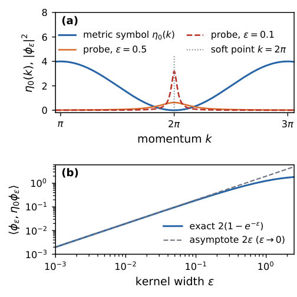
<figcaption class="paper-figure-caption"><b>Fig 1.</b> FIG. 1. Metric degeneracy of the BBM form η0 = ∆†∆in the Hardy representation. (a) Local window k ∈[π, 3π] around the soft point k = 2π: the boundary symbol η0(k) = 2(1 − cos k) vanishes quadratically at k = 2πZ, while the normal- ized Cauchy-kernel probes |ϕε|2 concentrate at the soft point as ε decreases. (b) The squared η0-norm of the unit-L2-norm probe, ⟨ϕε, η0ϕε⟩= 2(1−e−ε) (exact residue evaluation), van- ishes linearly in the small-width limit, 2(1−e−ε) = 2ε+O(ε2) as ε →0: normalized states can carry arbitrarily small metric length, i.e. η0 is not coercive.</figcaption>
</figure>
</div>

<p><strong>Summary.</strong> The paper rigorously analyzes the Hilbert space completion induced by the metric associated with the BBM Hamiltonian, a model linked to the Riemann zeta function zeros. By completing the state space in an $L^2$-based norm, the authors prove that the original candidate eigenfunctions cannot exist within this mathematically defined space. This establishes a significant mathematical obstruction to the initial physical interpretation of the BBM operator.</p>
<p><strong>Why it may be interesting.</strong> This work provides a deep mathematical constraint on speculative quantum models derived from number theory. For theorists working on spectral problems or non-Hermitian Hamiltonians, it demonstrates how imposing standard functional analysis structures can rule out proposed physical solutions.</p>
<details>
<summary>Detailed structure</summary>
<p><strong>Main problem.</strong> The paper analyzes the Hilbert completion induced by a candidate metric associated with the Bender--Brody--Müller (BBM) Hamiltonian, which is related to finding an operator whose spectrum yields the imaginary parts of the nontrivial zeros of the Riemann zeta function.</p>
<p><strong>Main result.</strong> The rigorous $L^2$-based metric completion forces the state space to be equivalent to $L^2(\mathbb{R}^+)$, and this framework proves that the original BBM candidate eigenfunctions do not belong to the completed space, invalidating the initial mechanism for finding point-spectrum states.</p>
<p><strong>Method.</strong> The analysis involves defining a pseudo-Hermitian metric $\hat{\eta}$ on the half-line $L^2(\mathbb{R}^+)$ and studying its completion. Techniques include Fourier/Mellin transforms to analyze the metric symbol, spectral theory (dilation generator), and deficiency index calculations.</p>
<p><strong>Model / system.</strong> The model centers on the BBM Hamiltonian, formally written as $ ext{H}_{    ext{BBM}} = \Delta^{-1}D\Delta$, where $D$ is the dilation generator. The mathematical framework uses a metric completion based on $\hat{\eta} = \sin^2(\hat{p}/2) = \Delta^\dagger\Delta/4$.</p>
<p><strong>Key observables.</strong> The spectrum of the free realization (purely continuous, $\mathbb{R}$), and the failure of the candidate eigenfunctions ($\psi_z$) to satisfy the required $L^2$ shift-difference condition.</p>
<p><strong>Important parameters / regimes.</strong> The critical line $\operatorname{Re} z = 1/2$, and the metric degeneracy observed when analyzing the symbol $\eta_0(k) = |1 - e^{-ik}|^2$.</p>
<p><strong>Assumptions / limitations.</strong> The primary assumption tested is that a standard $L^2$-based Hilbert completion using the candidate metric can support the required spectral structure.</p>
<p><strong>Figures summary.</strong> Figure 1 illustrates the metric degeneracy, showing $\eta_0(k)$ vanishing at specific points and the associated norm of probe functions vanishing linearly in the small-width limit.</p>
<p><strong>Paper structure.</strong> The paper proceeds by defining the BBM Hamiltonian and its associated metric. It then analyzes the properties of this metric completion, establishing that the resulting space is $L^2(\mathbb{R}^+)$. Finally, it tests the original physical conjecture (the existence of $\psi_z$) within this mathematically rigorous framework.</p>
</details>
<details>
<summary>Abstract</summary>
<p>The Bender--Brody--Müller (BBM) Hamiltonian was proposed as a non-Hermitian Hilbert--Pólya operator. We analyze the Hilbert completion induced, on the standard half-line $L^2$ core, by BBM's candidate metric $\hatη=\sin^2(\hat p/2)=Δ^\daggerΔ/4$. The form $η_0=Δ^\daggerΔ$ is positive with trivial kernel but is not coercive. Completing $C_c^\infty(0,\infty)$ in the norm $\|ψ\|_{η_0}=\|Δψ\|$ gives a Hilbert space canonically unitarily equivalent to $L^2(\mathbb R_+)$. Its free self-adjoint realization is the dilation generator, with simple, purely absolutely continuous spectrum $\mathbb R$. The analysis yields two spectral statements of interest beyond the BBM problem. First, no bounded sandwich $Δ^\dagger h(D)Δ$ is boundedly invertible. Second, the transported symmetric operator has deficiency indices $(\infty,\infty)$ and an adjoint with every real point as an eigenvalue of infinite multiplicity, while its free extension is purely continuous. The realization-independent BBM conclusion concerns the candidate eigenfunctions: $Δψ_z=x^{-z}$, so for $\operatorname{Re}z=1/2$ they do not belong to the completed space. Thus the original BBM boundary-condition/eigenfunction mechanism cannot produce point-spectrum Riemann-zero states in this $L^2$-based metric completion.</p>
</details>
<p><sub><a href="#top">↑ back to top</a></sub></p>

<p><a id="paper-2607.18848"></a></p>
<h3 id="quantum-enhanced-multi-objective-optimization"><a href="http://arxiv.org/abs/2607.18848v1">Quantum-Enhanced Multi-Objective Optimization</a></h3>
<p><strong>Authors:</strong> Maolin Luo, Jiapei Zhuang, Zuoheng Zou, Man-Hong Yung<br>
<strong>Type:</strong> theory · <strong>Category:</strong> disordered systems and neural networks · <strong>PDF:</strong> <a href="https://arxiv.org/pdf/2607.18848v1">https://arxiv.org/pdf/2607.18848v1</a><br>
<strong>Analysis basis:</strong> full PDF text, analyzed in chunks
<strong>Topic relevance:</strong> <code>analog quantum simulation</code> <strong>1/5</strong> · <code>exotic spin models in light-matter</code> <strong>1/5</strong></p>
<div class="figure-strip-hint">↔ Scroll figures horizontally</div>
<div class="paper-figures-scroll">
<figure class="paper-figure-card">
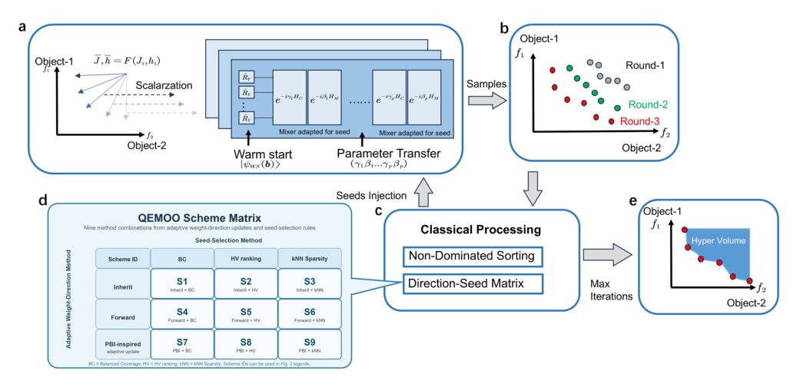
<figcaption class="paper-figure-caption"><b>Fig 1.</b> FIG. 1. Overview of the QEMOO framework. Panel a shows how the multi-objective Ising model is scalarized into a pool of single-objective subproblems and solved by QAOA circuits with transferred parameters; after the first pass, selected elite bitstrings are injected into later rounds through seed-adapted warm-start mixers. Panel b illustrates the round-wise samples in objective space, with Round-1, Round-2, and Round-3 shown in different colors. Panel c shows the classical processing block: non-dominated sorting filters accumulated samples into elite candidates, and the Direction-Seed Matrix determines how adaptive weight-direction updates and seed-selection rules are combined for the next...</figcaption>
</figure>
<figure class="paper-figure-card">
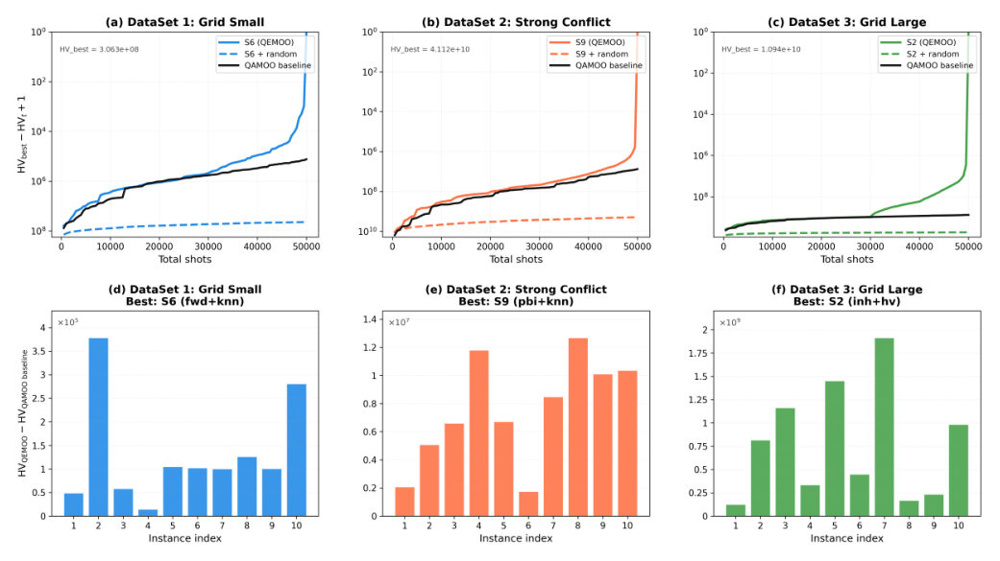
<figcaption class="paper-figure-caption"><b>Fig 2.</b> FIG. 2. Budget-normalized performance comparison and instance-level gains of the best QEMOO scheme on each benchmark dataset. The upper row reports HV-shots curves for DataSet 1: Grid Small, DataSet 2: Strong Conflict, and DataSet 3: Grid Large, respectively. Each upper-row panel compares the best QEMOO scheme for that dataset (S6, S9, or S2), the corresponding matched random-sampling variant (S6 + random, S9 + random, or S2 + random), and the single-pass QAMOO baseline of Kotil et al. [20]. Scheme IDs S1–S9 are defined by the QEMOO scheme matrix in Fig. 1. The matched random variant keeps the same adaptive weight-direction and seed-selection configuration as the corresponding QEMOO scheme...</figcaption>
</figure>
<figure class="paper-figure-card">
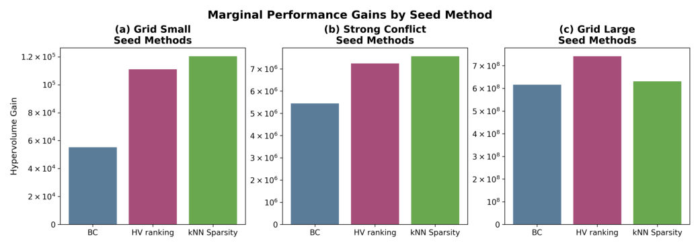
<figcaption class="paper-figure-caption"><b>Fig 3.</b> FIG. 3. Marginal Hypervolume gains of the Seed-Selection Methods in the rerun raw-HV benchmark. The three panels correspond to the Grid Small, Strong Conflict, and Grid Large benchmark stages. Each bar reports the baseline-relative HV gain averaged over the stage-appropriate Adaptive Weight-Direction Methods: Inherit and Forward for Grid Small and Grid Large, and PBI-inspired direction adaptation for Strong Conflict. This figure therefore isolates the average contribution of the Seed-Selection Method (BC, HV ranking, or kNN Sparsity), where BC denotes Balanced Coverage. It is complementary to the lower row of Fig. 2: Fig. 2 reports per-instance gains for the single best scheme in each...</figcaption>
</figure>
<figure class="paper-figure-card">
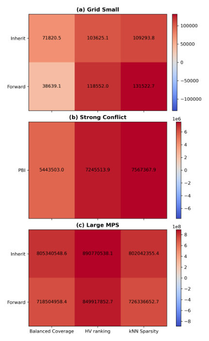
<figcaption class="paper-figure-caption"><b>Fig 4.</b> FIG. 4. Performance heatmaps detailing the hypervolume improvements across the rerun raw-HV benchmark suite: (a) Grid Small, (b) Strong Conflict, and (c) Grid Large. In each subplot, the horizontal axis delineates the Seed-Selection Methods (BC, HV ranking, kNN Sparsity), while the vertical axis lists the stage-appropriate Adaptive Weight-Direction Methods retained in the latest benchmark: Inherit and Forward for Grid Small and Grid Large, and PBI for the strong-conflict stage. Cell colors represent the mean raw Hypervolume (HV) gain relative to the 1-round baseline, with warm colors indicating positive gains and cool colors denoting regressions. The heatmaps show that the preferred...</figcaption>
</figure>
<figure class="paper-figure-card">
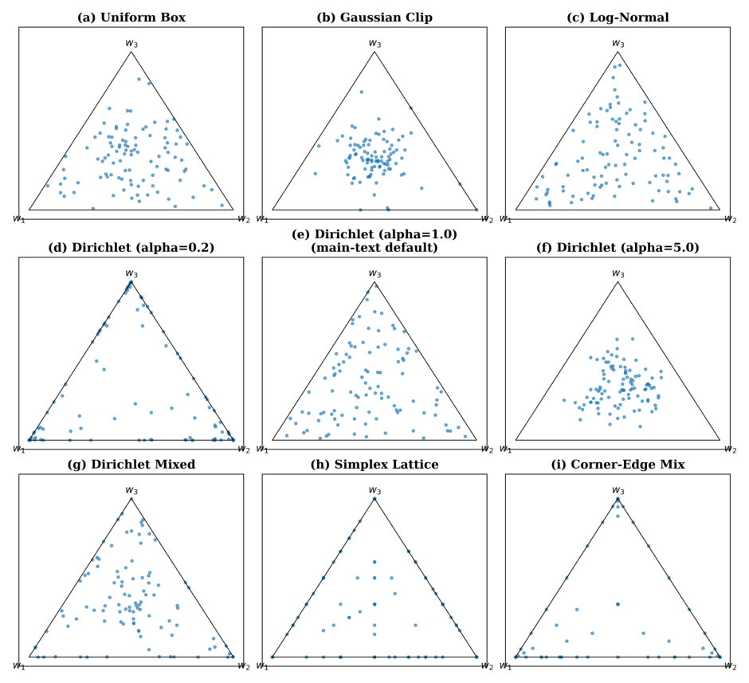
<figcaption class="paper-figure-caption"><b>Fig 5.</b> FIG. 5. Simplex-style visualization of the nine weight-pool schemes used in the latest all-9 Grid-Large analysis. Each panel is generated from the corresponding real pool file in the rerun suite, with vertex labels w1, w2, and w3 marking single-objective extremes. The figure covers normalized continuous pools (uniform box, gaussian clip, lognormal), the Dirichlet family (dirichlet sparse, dirichlet uniform, dirichlet center, dirichlet mixed), and structured designs (simplex lattice, edge pair corner mix). The dirichlet uniform panel is flagged as the main-text default pool.</figcaption>
</figure>
</div>

<p><strong>Summary.</strong> This paper introduces QEMOO, a novel multi-round quantum framework designed to tackle challenging multi-objective combinatorial optimization problems mapped onto Ising spin glasses. By iteratively refining the search using warm-started QAOA and adaptive direction updates, it achieves superior coverage of the true Pareto front compared to single-pass methods. This demonstrates a practical path toward efficient quantum computation for complex trade-off analysis.</p>
<p><strong>Why it may be interesting.</strong> The use of QAOA on spin-glass Hamiltonians places this work directly at the intersection of quantum algorithms for optimization and disordered systems physics. The focus on iterative refinement (warm-start) is relevant to understanding how quantum search can overcome local minima in complex energy landscapes.</p>
<details>
<summary>Detailed structure</summary>
<p><strong>Main problem.</strong> The challenge of multi-objective combinatorial optimization (MOCO), which requires finding the Pareto-optimal trade-off front among conflicting objectives.</p>
<p><strong>Main result.</strong> The proposed QEMOO framework significantly improves the hypervolume approximation of the Pareto front compared to single-pass quantum methods, especially in resource-constrained regimes.</p>
<p><strong>Method.</strong> QEMOO is a multi-round protocol combining Pareto-based selection with warm-started QAOA sampling and an adaptive direction update scheme inspired by PBI.</p>
<p><strong>Model / system.</strong> The problem is mapped onto Ising spin-glass Hamiltonians, requiring the identification of trade-off solutions across multiple conflicting objectives.</p>
<p><strong>Key observables.</strong> Hypervolume (HV) of the approximated Pareto front; Number of unique non-dominated solutions (ND).</p>
<p><strong>Important parameters / regimes.</strong> Total shot budget ($s_{total}$); Warm-start coefficient ($c$); Bond dimension ($\chi$).</p>
<p><strong>Assumptions / limitations.</strong> The PBI method requires linearization to maintain compatibility with the two-body Hamiltonian structure of near-term quantum processors.</p>
<p><strong>Figures summary.</strong> Figures illustrate QEMOO's multi-round process, performance heatmaps comparing different weight pool geometries, and scaling plots showing HV gain vs. shot budget or bond dimension.</p>
<p><strong>Paper structure.</strong> The paper introduces the MOCO problem mapped to Ising models, details the limitations of single-pass quantum approaches, proposes the QEMOO framework (multi-round protocol with adaptive updates), benchmarks its performance across various weight pool geometries and resource budgets, and analyzes the role of warm-starting.</p>
</details>
<details>
<summary>Abstract</summary>
<p>Multi-objective combinatorial optimization requires identifying Pareto-optimal trade-off solutions among conflicting objectives, often making it more demanding than its single-objective counterpart. Although quantum multi-objective optimization methods have begun to emerge, most existing quantum optimization workflows are still built around single-objective or fixed-scalarization settings. Building on existing weighted-sum QAOA approaches to quantum multi-objective optimization, we propose QEMOO, a quantum-enhanced multi-objective optimization framework that combines Pareto-based selection and warm-started QAOA sampling in a multi-round protocol under the same total shot budget. We further introduce a PBI-inspired adaptive direction-update scheme to improve coverage in strongly conflicting benchmark regimes. Across three benchmark stages, QEMOO improves Pareto-front hypervolume over the single-pass weighted-sum QAOA baseline under matched shot budgets, suggesting a practical route toward shot-efficient quantum-assisted multi-objective optimization and its future applications.</p>
</details>
<p><sub><a href="#top">↑ back to top</a></sub></p>

<p><a id="paper-2607.18872"></a></p>
<h3 id="absence-of-hidden-analytic-conserved-quantities-in-harmonically-confined-rods"><a href="http://arxiv.org/abs/2607.18872v1">Absence of hidden analytic conserved quantities in harmonically confined rods</a></h3>
<p><strong>Authors:</strong> Sahil Kumar Singh, Abhishek Dhar, Sanjay Moudgalya<br>
<strong>Type:</strong> theory · <strong>Category:</strong> statistical mechanics · <strong>PDF:</strong> <a href="https://arxiv.org/pdf/2607.18872v1">https://arxiv.org/pdf/2607.18872v1</a><br>
<strong>Analysis basis:</strong> full PDF text, analyzed in chunks
<strong>Topic relevance:</strong> <code>non-equilibrium dynamics</code> <strong>1/5</strong></p>
<div class="figure-strip-hint">↔ Scroll figures horizontally</div>
<div class="paper-figures-scroll">
<figure class="paper-figure-card">
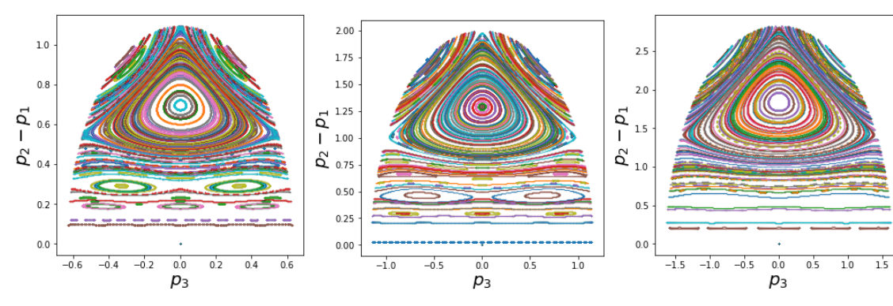
<figcaption class="paper-figure-caption"><b>Fig 1.</b> Figure 1: Poincar´e section for equal length hard rods: (a) E = 2.6, (b) E = 4, (c) E = 6. We have taken 100 different initial conditions used Ecm = 0 with rod lengths a = 1 in each of the plots.</figcaption>
</figure>
<figure class="paper-figure-card">
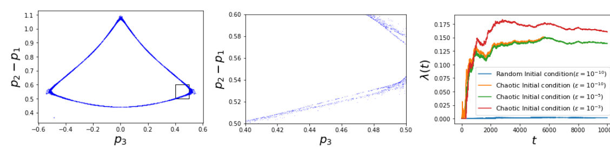
<figcaption class="paper-figure-caption"><b>Fig 2.</b> Figure 2: Chaotic trajectory: (a) Poincare section for a single initial condition (x1, x2, x3, p1, p2, p3) ≈(−1.002, 0.001, 1.001, 0, −0.545, 0.545) showing scattered points, as evident when zoomed-in on the square region as shown in (b). This is shown for a system of three rods of equal length a1 = a2 = a3 = 1, and the system has total energy E = 2.6, and center-of-mass energy Ecm = 0. (c) Time dependent Lyapunov exponent λ(t) for the chaotic trajectory in panels (a,b) using perturbations ϵ = 10−10 (orange), 10−5(green), 10−3(red), together with a randomly selected initial condition with ϵ = 10−10(blue) (τ = 1 for all four cases). The random trajectory remains near zero, whereas the...</figcaption>
</figure>
<figure class="paper-figure-card">
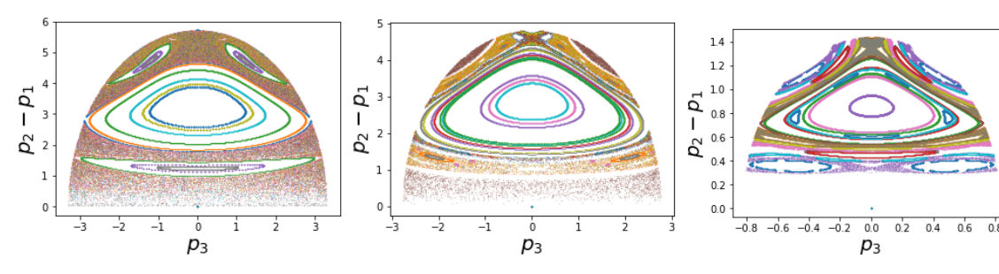
<figcaption class="paper-figure-caption"><b>Fig 3.</b> Figure 3: Poincar´e section for unequal length hard rods: (a) b1 = 1, b2 = 3.2, E = 13, Ecm = 0 (b) b1 = 0.5, b2 = 1.6, E = 7, Ecm = 0, (c) b1 = 1, b2 = 1.5, E = 2.1, Ecm = 0. The regularity of these Poincar´e sections appears to increase when the ratios of the rod lengths approaches unity.</figcaption>
</figure>
</div>

<p><strong>Summary.</strong> The paper rigorously analyzes the existence of hidden conserved quantities in hard rods confined by a harmonic trap. By imposing symmetry constraints derived from free motion and collisions, the authors demonstrate that for finite rods, only two independent conserved quantities exist. A notable exception is the point particle limit, where more integrals are found.</p>
<p><strong>Why it may be interesting.</strong> This work provides a rigorous, systematic methodology for determining the full set of classical integrals of motion in complex interacting systems, which is foundational knowledge applicable to understanding integrability breaking in quantum many-body physics.</p>
<details>
<summary>Detailed structure</summary>
<p><strong>Main problem.</strong> The paper investigates whether a system of hard rods confined in a harmonic trap possesses hidden analytic conserved quantities beyond the known total energy and center-of-mass energy.</p>
<p><strong>Main result.</strong> For general hard rods, conservation laws impose symmetry constraints ($    ext{U}(1)$ and $    ext{S}_N$) that force any conserved quantity to be functionally dependent only on the two known integrals of motion. However, for point particles (zero length), a larger set of such quantities is found.</p>
<p><strong>Method.</strong> The authors use systematic algebraic methods by requiring that potential conserved quantities must remain invariant under symmetries dictated by free motion ($ ext{U}(1)$) and collisions ($    ext{S}_N$).</p>
<p><strong>Model / system.</strong> The system consists of $N$ hard rods of equal length confined in a one-dimensional harmonic trap. The dynamics are analyzed for free motion, elastic collisions, and the special case where all rods are point particles.</p>
<p><strong>Key observables.</strong> Conserved quantities (integrals of motion), ergodicity, and thermalization behavior.</p>
<p><strong>Important parameters / regimes.</strong> Harmonic trap frequency ($\omega$), rod lengths ($a_i$), number of rods ($N$).</p>
<p><strong>Assumptions / limitations.</strong> The analysis is strictly limited to finding <em>analytic</em> conserved quantities. The comparison between finite-length rods and point particles highlights a crucial distinction in the symmetry requirements.</p>
<p><strong>Figures summary.</strong> Not specified by the notes, but the text references Table 1 summarizing symmetry constraints for different dynamics (Free motion, Point particles, SMED &amp; Rods with non-zero length).</p>
<p><strong>Paper structure.</strong> The paper systematically analyzes four distinct dynamical regimes: free motion; collisions with finite rods; zero-length point particles; and Stochastic Momentum Exchange Dynamics (SMED), applying symmetry constraints in each case to determine the structure of conserved quantities.</p>
</details>
<details>
<summary>Abstract</summary>
<p>Systems of hard rods of equal length in a one-dimensional harmonic trap have been observed to exhibit peculiar non-ergodic behavior that might suggest the existence of a novel hidden conserved quantity beyond the two well known ones, i.e., the total energy and the center-of-mass energy. In this work, we investigate this possibility by systematically constraining the forms of the conserved quantities, and we rigorously rule out the existence of any extra hidden conserved quantity that is analytic in the positions and momenta of the rods involved. We do so by showing two key results: conservation during free motion demands the $U(1)$ invariance of these quantities under rotations of the position and momenta of each rod, and conservation during collisions demand an $S_N$ invariance under the permutation of the momenta of the rods as long as one of the rods have non-zero length. We then show that these conditions imply that any conserved quantity is functionally dependent on the two known conserved quantities. In addition, we show that in the special case where all rods have zero length (i.e., when they are point particles), conservation under collisions only requires invariance under a smaller $S_N$ group of permutations of the labels of the rods, which leads to a much larger set of analytic conserved quantities that we explicitly write down. In all, this rigorously clarifies the structure of conserved quantities in the hard rod problem, and motivates the application of such systematic methods to other classical systems.</p>
</details>
<p><sub><a href="#top">↑ back to top</a></sub></p>

<p><a id="paper-2607.19197"></a></p>
<h3 id="bound-state-solutions-of-the-schrodinger-equation-for-the-atomic-systems-interacting-with-the-radial-screened-coulomb-potential-analytical-approximation-methods"><a href="http://arxiv.org/abs/2607.19197v1">Bound state solutions of the Schrödinger equation for the atomic systems interacting with the radial screened Coulomb potential: analytical approximation methods</a></h3>
<p><strong>Authors:</strong> Fatma Zohra Khaled, Mustafa Moumni, Mokhtar Falek<br>
<strong>Type:</strong> theory · <strong>Category:</strong> other · <strong>PDF:</strong> <a href="https://arxiv.org/pdf/2607.19197v1">https://arxiv.org/pdf/2607.19197v1</a><br>
<strong>Analysis basis:</strong> full PDF text, analyzed in chunks
<strong>Topic relevance:</strong> <code>Keldysh / 2PI / non-Gaussian methods</code> <strong>1/5</strong></p>
<div class="figure-strip-hint">↔ Scroll figures horizontally</div>
<div class="paper-figures-scroll">
<figure class="paper-figure-card">
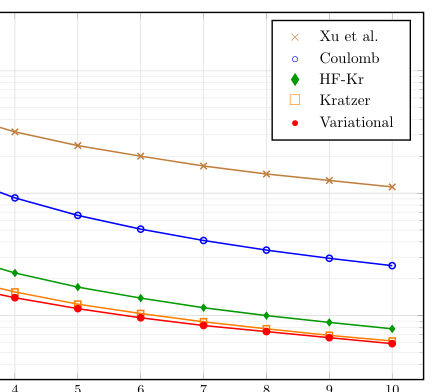
<figcaption class="paper-figure-caption"><b>Fig 1.</b> Figure 1. Relative errors (%, logarithmic scale) of the calculated energies for the first ten s states of the hydrogen atom in the RSCP at c = 0.1, measured with respect to the GPS reference values.</figcaption>
</figure>
<figure class="paper-figure-card">
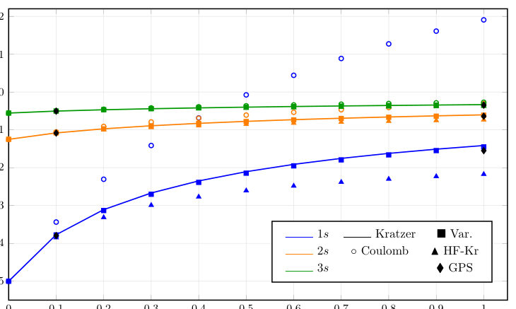
<figcaption class="paper-figure-caption"><b>Fig 2.</b> Figure 2. Comprehensive comparison of energy eigenvalues for the first three s-states (1s, 2s, 3s) of the hydrogen atom in the RSCP as functions of the screening parameter c. All methods are shown for c values from 0 to 1 with steps of 0.1. GPS reference values are shown at both c = 0.1 and c = 1.0 (diamonds). Symbols: solid lines = Kratzer reference; open circles (◦) = Coulomb reference; filled squares (■) = variational method; filled triangles (▲) = Hellmann–Feynman with Kratzer basis; filled diamonds (♦) = GPS reference.</figcaption>
</figure>
<figure class="paper-figure-card">
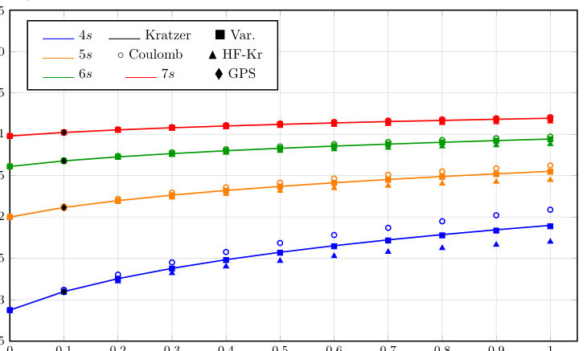
<figcaption class="paper-figure-caption"><b>Fig 3.</b> Figure 3. Comprehensive comparison of energy eigenvalues for higher excited s states (4s, 5s, 6s, and 7s) of the hydrogen atom in the RSCP as functions of the screening parameter c. All methods are shown for c values from 0 to 1 with steps of 0.1. GPS reference values are shown at c = 0.1 (diamonds). Symbols: solid lines = Kratzer reference; open circles (◦) = Coulomb reference; filled squares (■) = variational method; filled triangles (▲) = Hellmann–Feynman with Kratzer basis; filled diamonds (♦) = GPS reference.</figcaption>
</figure>
<figure class="paper-figure-card">
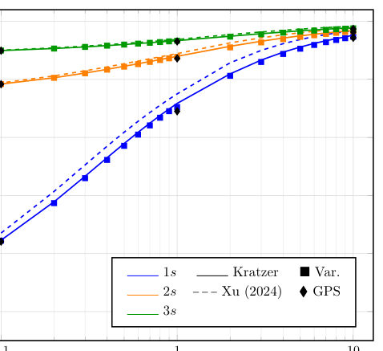
<figcaption class="paper-figure-caption"><b>Fig 4.</b> Figure 4. Comparison of the EVA with Kratzer basis (solid lines) with the asymptotic approximation of Xu et al. (2024) (dashed lines) for the first three s-states over the range 0 ≤c ≤1. Filled squares (■) show the variational results. Diamonds (♦) indicate GPS reference values at c = 0.1 and c = 1.0.</figcaption>
</figure>
<figure class="paper-figure-card">
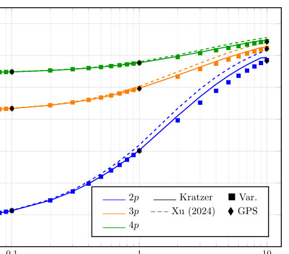
<figcaption class="paper-figure-caption"><b>Fig 5.</b> Figure 5. Comparison of the EVA with Kratzer basis (solid lines) with the asymptotic approximation of Xu et al. (2024) (dashed lines) for the p-states (2p, 3p, 4p) over the range 0 ≤c ≤1. Filled squares (■) show the variational results. Diamonds (♦) indicate GPS reference values at c = 0.1 and c = 1.0.</figcaption>
</figure>
</div>

<p><strong>Summary.</strong> This paper develops and compares three sophisticated analytical methods—expectation values, variational optimization, and the Hellmann-Feynman theorem—to determine the bound state energies of hydrogenic atoms in a screened Coulomb potential. By achieving high accuracy relative to numerical benchmarks, it provides valuable theoretical tools for understanding atomic structure within plasma diagnostics.</p>
<p><strong>Why it may be interesting.</strong> This work provides advanced analytical tools for calculating atomic energy levels in realistic plasma environments where screening effects are crucial. The combination of multiple theoretical approaches offers robust benchmarking for complex quantum systems.</p>
<details>
<summary>Detailed structure</summary>
<p><strong>Main problem.</strong> The study investigates the bound state properties of hydrogen-like atoms when interacting with the radial screened Coulomb potential (RSCP). The goal is to derive approximate energy eigenvalues as a function of the screening parameter.</p>
<p><strong>Main result.</strong> The expectation value approach using the Kratzer basis achieved relative errors of 0.63% for the first ten s-states at $c=0.1$, with further improvements possible via variational methods. The formalism is general and applicable to Positronium.</p>
<p><strong>Method.</strong> Three complementary analytical approaches are employed: expectation values using reference states (Coulomb/Kratzer), variational optimization with a scaled Kratzer basis, and the Hellmann-Feynman theorem for error estimation.</p>
<p><strong>Model / system.</strong> The system is hydrogen-like atoms modeled by the radial Schrödinger equation subjected to the RSCP potential, $V_{RSCP}(r) = -Ze^2/r e^{-c/r}$. This potential models short-range screening effects in plasma environments.</p>
<p><strong>Key observables.</strong> Approximate energy eigenvalues ($E_{n,l}$) as a function of the screening parameter $c$.</p>
<p><strong>Important parameters / regimes.</strong> Screening parameter $c$, quantum numbers $(n, \ell)$, and variational parameters $eta$. The limit $c 	o 0$ recovers the standard Coulomb result.</p>
<p><strong>Assumptions / limitations.</strong> The methods rely on using approximate wavefunctions derived from reference potentials (Coulomb or Kratzer) to evaluate expectation values of the full RSCP Hamiltonian. The Hellmann-Feynman approach requires numerical integration for certain parameters.</p>
<p><strong>Paper structure.</strong> The paper systematically details three methods—expectation value, variational, and Hellmann-Feynman—for calculating energy eigenvalues, compares their results against high-precision data, demonstrates the general applicability to Positronium, and concludes with error analysis.</p>
</details>
<details>
<summary>Abstract</summary>
<p>We investigate the bound state properties of the hydrogen-like atoms in the radial screened Coulomb potential (RSCP). using three complementary analytical approaches - expectation values with Coulomb and Kratzer reference states, variational optimization with a scaled Kratzer basis, and the Hellmann-Feynman theorem - we derive approximate energy eigenvalues as function of the screening parameter c. Benchmarked against high-precision generalized pseudospectral data, the expectation value-approach with the Kratzer basis achieves relative errors of 0.63% for the first ten s-states at $c=0.1$, while the variational method improves this further. The formalism extends naturally to Positronium, demonstrating its generality for arbitrary reduced-mass systems. The complementary biases of the methods provide robust error estimation for plasma-embedded atoms.</p>
</details>
<p><sub><a href="#top">↑ back to top</a></sub></p>

<p><a id="paper-2607.18888"></a></p>
<h3 id="mosaiqc-mixed-topology-aware-optimization-for-scalable-approximate-noise-informed-quantum-circuit-cutting"><a href="http://arxiv.org/abs/2607.18888v1">MOSAIQC: Mixed-topology-aware Optimization for Scalable Approximate noise-Informed Quantum circuit Cutting</a></h3>
<p><strong>Authors:</strong> Koen Mesman, Yinglu Tang, Matthias Moller, Boyang Chen, Sebastian Feld<br>
<strong>Type:</strong> theory · <strong>Category:</strong> quantum information and computing · <strong>PDF:</strong> <a href="https://arxiv.org/pdf/2607.18888v1">https://arxiv.org/pdf/2607.18888v1</a><br>
<strong>Analysis basis:</strong> full PDF text, analyzed in chunks
<strong>Topic relevance:</strong> <code>methods for driven-dissipative</code> <strong>1/5</strong></p>
<div class="figure-strip-hint">↔ Scroll figures horizontally</div>
<div class="paper-figures-scroll">
<figure class="paper-figure-card">
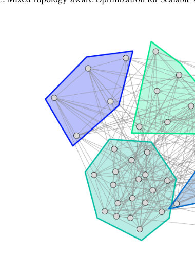
<figcaption class="paper-figure-caption"><b>Fig 1.</b> Fig. 1. Example of partition mapping by MosaiQC of smaller-capacity hardware backends to a large quantum circuit. The vertices represent qubits, and the edges represent 2-qubit gates. Each polygon represents a different quantum hardware backend.</figcaption>
</figure>
<figure class="paper-figure-card">
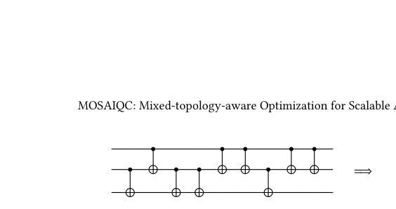
<figcaption class="paper-figure-caption"><b>Fig 2.</b> Fig. 3. Example of mixed gate and wire cut optimization.</figcaption>
</figure>
<figure class="paper-figure-card">
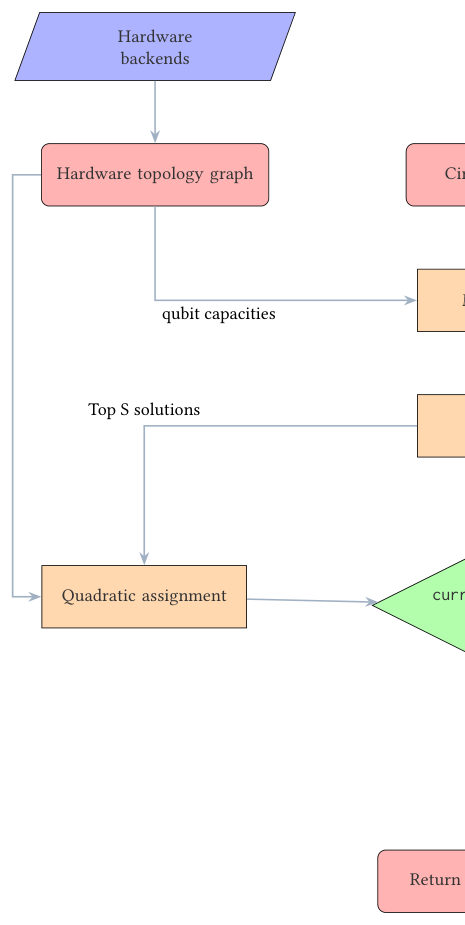
<figcaption class="paper-figure-caption"><b>Fig 3.</b> Fig. 4. Partitioning and mapping workflow of MosaiQC.</figcaption>
</figure>
<figure class="paper-figure-card">
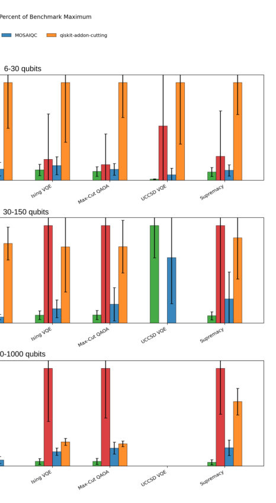
<figcaption class="paper-figure-caption"><b>Fig 4.</b> Fig. 5. Runtime comparison of MosaiQC and its subcomponents against the baseline Dijkstra algorithm (early stopping and exact), scaled as runtime/num_qubits and shown as a percentage of the highest runtime per benchmark.</figcaption>
</figure>
<figure class="paper-figure-card">
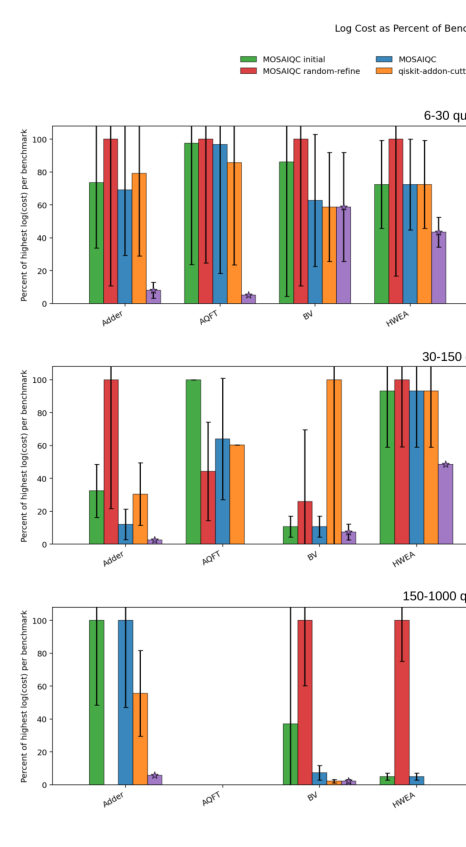
<figcaption class="paper-figure-caption"><b>Fig 5.</b> Fig. 6. Sampling overhead cost comparison of MosaiQC and its subcomponents against the baseline Dijkstra algorithm (early stopping and exact), scaled as sampling_overhead/num_qubits and shown as a percentage of the highest runtime per benchmark.</figcaption>
</figure>
</div>

<p><strong>Summary.</strong> This paper introduces MOSAIQC, a novel framework designed to overcome limitations in running large quantum algorithms on current noisy hardware by intelligently cutting and remapping circuits. It achieves this through a hybrid optimization process that jointly considers gate/wire cuts, hardware noise profiles, and sampling overhead. The results show substantial improvements in both speed and solution quality compared to existing methods.</p>
<p><strong>Why it may be interesting.</strong> While focused on quantum computation, the rigorous development of scalable heuristic optimization techniques for resource allocation (like circuit partitioning) shares methodological parallels with optimizing complex physical simulations or network mapping in AMO physics.</p>
<details>
<summary>Detailed structure</summary>
<p><strong>Main problem.</strong> The primary challenge is developing a scalable method for quantum circuit cutting to execute large algorithms on current, resource-limited Noisy Intermediate-Scale Quantum (NISQ) hardware.</p>
<p><strong>Main result.</strong> MOSAIQC demonstrates superior trade-offs in run speed and solution quality by jointly optimizing sampling overhead, hardware placement, and mixed gate/wire cuts, achieving significant reductions in computational overhead.</p>
<p><strong>Method.</strong> The framework uses a hybrid approach combining global heuristics (like METIS) for initial partitioning with local refinement optimization (Tabu Search), incorporating noise-informed cost functions.</p>
<p><strong>Model / system.</strong> The system involves mapping large quantum circuits onto smaller, potentially heterogeneous quantum processors. The circuit connectivity and hardware topology are modeled as weighted graphs to calculate cutting costs.</p>
<p><strong>Key observables.</strong> Local fidelity improvement (+19.56% $\pm$ 6.17%), runtime speedup ($2.88 	imes$), and massive reduction in sampling overhead ($   ext{average } 5.83 \cdot 10^{11}    imes$).</p>
<p><strong>Important parameters / regimes.</strong> Qubit count (scaling from 6 to 1000+), cut types (gate vs. wire), hardware connectivity, and noise characteristics.</p>
<p><strong>Assumptions / limitations.</strong> The framework assumes the ability to convert quantum circuit objects into lightweight graph structures for efficient computation; existing heuristics often fail to jointly optimize all necessary parameters.</p>
<p><strong>Figures summary.</strong> Figures illustrate performance comparisons across various benchmark circuits (e.g., QAOA, Ising VQE) at increasing qubit scales, showing runtime and sampling overhead results for different cut placement strategies.</p>
<p><strong>Paper structure.</strong> The paper introduces the problem of circuit cutting limitations, details the novel MOSAIQC framework using graph representations and a hybrid optimization strategy, presents specific algorithms for wire/gate cut cost calculation, and concludes with extensive comparative results across multiple scales and benchmarks.</p>
</details>
<details>
<summary>Abstract</summary>
<p>Current quantum computers do not yet have the required qubit resources to meet the demands of most practical quantum algorithms. To circumvent this constraint, the practice of dividing these algorithms into parts through quantum circuit cutting has been explored. Many of these works either show exponential scaling or are far from optimal solutions. In this paper, MosaiQC is presented as a novel framework to improve upon existing circuit cutting frameworks. A hybrid warmstart with refinement optimization is used to find cutting solutions, allowing the combination of both wire and gate cuts. Additionally, MosaiQC enables hardware partitions of mixed sizes. Furthermore, the refinement stage incorporates a fast approximate quadratic assignment solver to better place hardware partitions, demonstrating a mean local fidelity improvement of $19.56 \% \pm 6.17\%$ over the baseline algorithm. In runtime and sampling overhead costs, improvements of $2.88 \times$ and an average of $16.84\%$ cut reduction (resulting in an average $5.83 \cdot 10^{11} \times$ overhead reduction) are observed. MosaiQC demonstrates a superior trade-off for run speed and solution quality, while adding fundamental features excluded by most competitors. With this, MosaiQC demonstrates that scalable heuristic optimization can substantially reduce the computational overhead of circuit-cut placement for increasingly large quantum circuits.</p>
</details>
<p><sub><a href="#top">↑ back to top</a></sub></p>

<p><a id="paper-2607.19263"></a></p>
<h3 id="the-limits-of-quantum-computers-for-power-flow"><a href="http://arxiv.org/abs/2607.19263v1">The Limits of Quantum Computers for Power Flow</a></h3>
<p><strong>Authors:</strong> Cameron Khanpour, Samuel Talkington<br>
<strong>Type:</strong> theory · <strong>Category:</strong> quantum information and computing · <strong>PDF:</strong> <a href="https://arxiv.org/pdf/2607.19263v1">https://arxiv.org/pdf/2607.19263v1</a><br>
<strong>Analysis basis:</strong> full PDF text, analyzed in chunks
<strong>Topic relevance:</strong> <code>analog quantum simulation</code> <strong>1/5</strong></p>
<div class="figure-strip-hint">↔ Scroll figures horizontally</div>
<div class="paper-figures-scroll">
<figure class="paper-figure-card">
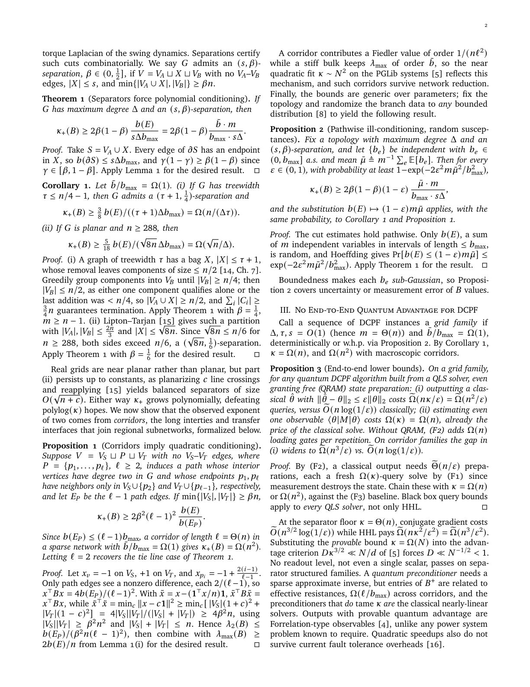
<figcaption class="paper-figure-caption"><b>Fig 1.</b> Low-resolution page preview, page 2</figcaption>
</figure>
<figure class="paper-figure-card">
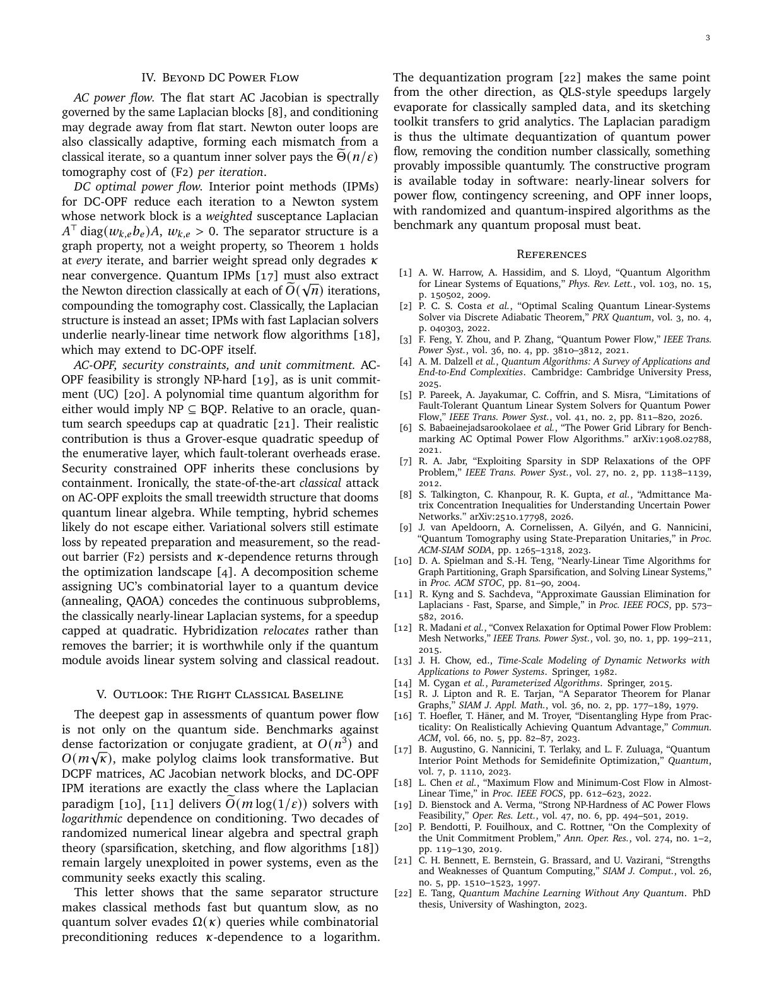
<figcaption class="paper-figure-caption"><b>Fig 2.</b> Low-resolution page preview, page 3</figcaption>
</figure>
</div>

<p><strong>Summary.</strong> This work proves that inherent topological features of real power grids cause the necessary matrices for solving power flow problems to become extremely ill-conditioned. This structural limitation forces both classical and quantum computation time requirements to scale poorly with grid size, effectively precluding a general end-to-end quantum advantage for these critical engineering tasks.</p>
<p><strong>Why it may be interesting.</strong> While focused on electrical engineering, the core mathematical tools—analyzing computational bottlenecks via matrix conditioning and structural graph properties—are highly relevant to understanding resource limitations in simulating complex quantum many-body systems or analyzing quantum network architectures.</p>
<details>
<summary>Detailed structure</summary>
<p><strong>Main problem.</strong> The paper investigates whether quantum computers can achieve an end-to-end computational advantage over classical methods when solving large-scale power flow problems.</p>
<p><strong>Main result.</strong> Structural properties of realistic electrical grids, such as graph separators and long corridors, cause the underlying mathematical matrices to become severely ill-conditioned, precluding a general quantum advantage for these tasks.</p>
<p><strong>Method.</strong> The analysis combines rigorous graph theory (analyzing network topology) with quantum complexity theory (query and readout bounds) to establish lower bounds on computational difficulty.</p>
<p><strong>Model / system.</strong> The model is an electrical transmission network represented by graphs $G=(V, E)$, whose core mathematical structure involves the susceptance Laplacian matrix. The problems analyzed include DC/AC Power Flow, Optimal Power Flow, and Unit Commitment.</p>
<p><strong>Key observables.</strong> Pseudo condition number ($\kappa_+(B)$), which dictates the required computational resources for solving linear systems derived from network physics.</p>
<p><strong>Important parameters / regimes.</strong> Network size ($n$), graph separators, corridor lengths ($\ell$), and quantum complexity bounds related to $\epsilon$ (precision).</p>
<p><strong>Assumptions / limitations.</strong> The analysis assumes that realistic grid topologies exhibit structural limitations like separators or corridors, and it proves the lack of advantage at <em>every</em> readout level.</p>
<p><strong>Paper structure.</strong> The paper proceeds by analyzing the condition number growth based on network topology (separators vs. corridors), demonstrating that this growth forces quantum query complexity to exceed classical scaling, and then generalizing these obstructions across various power flow formulations.</p>
</details>
<details>
<summary>Abstract</summary>
<p>This letter proves realistic grid properties limit the applicability of quantum computers for power flow. Grids that split into two large regions meeting at only a few buses, common in transmission networks, force the pseudo condition number of the DC susceptance matrix to grow polynomially in the network size, and long chains of lines bridging such regions force quadratic growth, making recent empirical observations rigorous. The bounds also hold with overwhelming probability for arbitrary bounded random line susceptances. Combined with query and tomography lower bounds, this precludes end-to-end quantum advantage for DC power flow at every readout level, and these obstructions persist through AC power flow, optimal power flow, and unit commitment. All proofs are formally verified with accompanying Lean 4 source code.</p>
</details>
<p><sub><a href="#top">↑ back to top</a></sub></p>
<h2 id="other-papers-3">Other papers (3)</h2>
<p><em>Papers from primary archives without highlighted authors or any topic match. Click to expand.</em></p>
<details>
<summary>Show other papers</summary>

<p><a id="paper-2607.19309"></a></p>
<h3 id="perfect-state-transfer-in-grover-walks-on-normal-cayley-graphs"><a href="http://arxiv.org/abs/2607.19309v1">Perfect state transfer in Grover walks on normal Cayley graphs</a></h3>
<p><strong>Authors:</strong> Koushik Bhakta, Bikash Bhattacharjya<br>
<strong>Type:</strong> theory · <strong>Category:</strong> quantum information and computing · <strong>PDF:</strong> <a href="https://arxiv.org/pdf/2607.19309v1">https://arxiv.org/pdf/2607.19309v1</a><br>
<strong>Analysis basis:</strong> full PDF text, analyzed in chunks</p>
<div class="figure-strip-hint">↔ Scroll figures horizontally</div>
<div class="paper-figures-scroll">
<figure class="paper-figure-card">
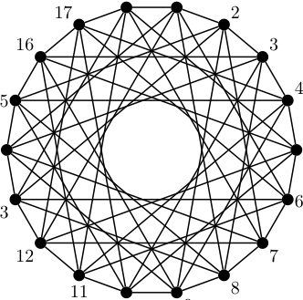
<figcaption class="paper-figure-caption"><b>Fig 1.</b> Figure 1: Two examples of periodic unitary Cayley graphs</figcaption>
</figure>
</div>
<p><strong>Summary.</strong> This paper rigorously determines the necessary and sufficient spectral conditions for Perfect State Transfer (PST) when using Grover walks on normal Cayley graphs. By applying group theory and spectral analysis, it derives explicit criteria for various families of graphs, culminating in a complete classification showing that only four unitary Cayley graphs exhibit this phenomenon.</p>
<p><strong>Why it may be interesting.</strong> Quantum walks are fundamental models in quantum computation and quantum communication networks. Establishing precise mathematical conditions for PST provides concrete graph-theoretic tools applicable to designing robust quantum information channels.</p>
<details>
<summary>Detailed structure</summary>
<p><strong>Main problem.</strong> The paper investigates the conditions for Perfect State Transfer (PST) occurring during Grover walks on a specific class of graphs called normal Cayley graphs.</p>
<p><strong>Main result.</strong> A necessary and sufficient condition for PST is established, leading to complete characterizations for unitary Cayley graphs, proving that exactly four such graphs exhibit this property.</p>
<p><strong>Method.</strong> The analysis heavily relies on spectral graph theory, utilizing the eigenvalues of a derived 'discriminant matrix' ($P$) and relating PST conditions to Chebyshev polynomials evaluated at these eigenvalues.</p>
<p><strong>Model / system.</strong> The system models quantum walks governed by the Grover walk operator $U$ on a normal Cayley graph $ ext{Cay}(\Gamma, S)$ over a finite group $\Gamma$. The state space is defined over the symmetric arcs of this graph.</p>
<p><strong>Key observables.</strong> Perfect State Transfer (PST) between vertices at time $    au$, and the periodicity of the quantum walk dynamics.</p>
<p><strong>Important parameters / regimes.</strong> The structure of the underlying finite group $\Gamma$ (e.g., abelian, dicyclic, dihedral), the connection set $S$, and the time step $   au$.</p>
<p><strong>Assumptions / limitations.</strong> The analysis is restricted to normal Cayley graphs, and the focus is on transfer between specific 'vertex-type states.'</p>
<p><strong>Figures summary.</strong> Not specified in detail, but the notes mention Figure 1 illustrating examples of periodic unitary Cayley graphs ($G_{Z_{12}}$ and $G_{Z_{18}}$).</p>
<p><strong>Paper structure.</strong> The paper progresses by defining PST on normal Cayley graphs, deriving general spectral conditions using representation theory (Theorem 3.4), applying these criteria to specific group structures like abelian, dicyclic, and dihedral groups, and concluding with a complete characterization for unitary Cayley graphs.</p>
</details>
<details>
<summary>Abstract</summary>
<p>A Cayley graph $\operatorname{Cay}(Γ,S)$ over a finite group $Γ$ is said to be normal if its connection set $S$ is a union of some conjugacy classes of $Γ$. This paper investigates perfect state transfer in Grover walks on normal Cayley graphs. The Grover walk is a widely studied discrete-time quantum walk. We establish a necessary and sufficient condition for the occurrence of perfect state transfer on normal Cayley graphs. As applications, we derive explicit spectral criteria for perfect state transfer on Cayley graphs over abelian groups, dicyclic groups, and dihedral groups. These results yield several infinite families of Cayley graphs exhibiting perfect state transfer. We further obtain simple combinatorial characterizations of the existence of perfect state transfer on Cayley graphs over dihedral and dicyclic groups. Our general characterization also recovers a number of previously known results as special cases. As a further consequence, we obtain a complete characterization of perfect state transfer on unitary Cayley graphs. In particular, we prove that exactly four graphs in the class of unitary Cayley graphs exhibit perfect state transfer.</p>
</details>
<p><sub><a href="#top">↑ back to top</a></sub></p>

<p><a id="paper-2607.19151"></a></p>
<h3 id="quantum-circuits-for-quantum-spatial-search-on-math852math-dimensional-lattices"><a href="http://arxiv.org/abs/2607.19151v1">Quantum Circuits for Quantum Spatial Search on $d$-Dimensional Lattices</a></h3>
<p><strong>Authors:</strong> Rei Sato<br>
<strong>Type:</strong> theory · <strong>Category:</strong> quantum information and computing · <strong>PDF:</strong> <a href="https://arxiv.org/pdf/2607.19151v1">https://arxiv.org/pdf/2607.19151v1</a><br>
<strong>Analysis basis:</strong> full PDF text, analyzed in chunks</p>
<div class="figure-strip-hint">↔ Scroll figures horizontally</div>
<div class="paper-figures-scroll">
<figure class="paper-figure-card">
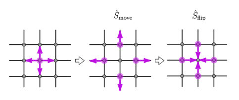
<figcaption class="paper-figure-caption"><b>Fig 1.</b> Figure 1. Definition of the flip-flop walk on a two- dimensional lattice.</figcaption>
</figure>
<figure class="paper-figure-card">

<figcaption class="paper-figure-caption"><b>Fig 2.</b> Figure 2. Schematic of the proposed quantum circuit for spatial search by a discrete-time quantum walk on a d- dimensional lattice with t = 1.</figcaption>
</figure>
<figure class="paper-figure-card">
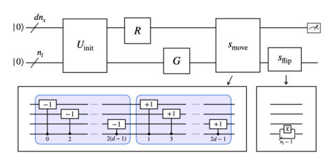
<figcaption class="paper-figure-caption"><b>Fig 3.</b> Figure 2 shows the schematic of the proposed quan- tum circuit for spatial search. The initial state for the time-evolution operator de- fined in Eq. (2) is prepared as a uniform superposition over the position and coin basis states:</figcaption>
</figure>
<figure class="paper-figure-card">
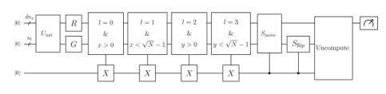
<figcaption class="paper-figure-caption"><b>Fig 4.</b> Figure 3. Quantum circuit for quantum spatial search on a d = 2 lattice with non-periodic boundary conditions. After the state preparation, each search step consists of the oracle ˆR, the coin operator ˆG, the computation of the validity flag a(x, l) into the auxiliary register |s⟩by multi- controlled X gates, and the shift operations ˆSmove and ˆSflip controlled on the auxiliary register.</figcaption>
</figure>
<figure class="paper-figure-card">
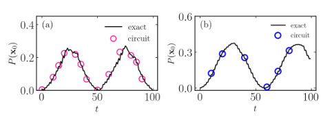
<figcaption class="paper-figure-caption"><b>Fig 5.</b> Figure 4. Time evolution of the success probability P(x0) at the target site in the quantum spatial search. (a) d = 2 lattice corresponding to the square lattice with periodic boundary conditions and N = 256. (b) d = 3 lattice corresponding to the cubic lattice with periodic boundary conditions, where each side has length 8 and N = 512. The solid line represents the exact value obtained by classical simulation, while the open circles indicate results from a quantum circuit simulation, with 1000 measurements per data point.</figcaption>
</figure>
</div>
<p><strong>Summary.</strong> This paper develops an explicit quantum circuit implementation for performing spatial search using discrete-time quantum walks on $d$-dimensional lattices. By decomposing the complex shift operator into basic gates, they achieve resource estimates showing logarithmic width growth and polynomial depth scaling ($O(\sqrt{N})$ to $O(\sqrt{N}(\log N)^{3/2})$). The results offer a practical roadmap for realizing such search algorithms on quantum hardware.</p>
<p><strong>Why it may be interesting.</strong> This work provides a concrete, implementable quantum algorithm framework for search problems on structured lattices, directly connecting abstract quantum walk theory to near-term hardware constraints like gate depth and error rates.</p>
<details>
<summary>Detailed structure</summary>
<p><strong>Main problem.</strong> The paper develops an explicit quantum circuit for performing spatial search on $d$-dimensional lattices using discrete-time quantum walks.</p>
<p><strong>Main result.</strong> They provide a practical framework, including circuits that reproduce theoretical dynamics for periodic and non-periodic boundaries, with depth scaling analyzed as $O(\sqrt{N}(\log N)^{3/2})$ for 2D and $O(\sqrt{N})$ for 3D.</p>
<p><strong>Method.</strong> The core method involves decomposing the quantum walk operator ($\hat{W} = \hat{S}\hat{C}$) into implementable quantum gates, specifically using coin-controlled modular arithmetic operations to simulate the shift operator $\hat{S}$.</p>
<p><strong>Model / system.</strong> The model is a discrete-time quantum walk on $d$-dimensional lattices (2D square and 3D cubic), where the state space includes both position $|x
angle$ and internal direction/coin state $|l
angle$. The search process incorporates an oracle ($\hat{R}$) marking the target site.</p>
<p><strong>Key observables.</strong> Success probability $P(x_0)$, circuit width ($O(\log N)$), and circuit depth (scaling as $O(\sqrt{N})$ or $O(\sqrt{N}(\log N)^{3/2})$).</p>
<p><strong>Important parameters / regimes.</strong> The dimensionality $d$ (2D, 3D) and the lattice size $N$. Noise robustness is analyzed under a CX-gate depolarizing noise model.</p>
<p><strong>Assumptions / limitations.</strong> The analysis assumes a CX-gate depolarizing noise model for error estimation. The circuit construction relies on specific encoding schemes to implement direction reversal using minimal gates (e.g., a single X gate).</p>
<p><strong>Figures summary.</strong> Figures illustrate the quantum circuits for 2D and 3D lattices, show time evolution of success probability $P(x_0)$ under different boundary conditions, and plot resource scaling (width/depth) versus lattice size $N$.</p>
<p><strong>Paper structure.</strong> The paper first defines the theoretical framework using quantum walks on $d$-dimensional lattices. It then details the circuit construction for the shift operator $\hat{S}$ and extends it to non-periodic boundaries. Finally, it performs resource analysis (width/depth) and noise robustness testing.</p>
</details>
<details>
<summary>Abstract</summary>
<p>We propose an explicit quantum circuit for quantum spatial search based on discrete-time quantum walks on $d$-dimensional lattices. In this algorithm, the flip-flop shift operator moves the walker to a neighboring site along the selected spatial direction and reverses the corresponding direction label after the move. By encoding each pair of opposite directions so that they differ only in the least significant qubit of the coin register, we implement the shift using coin-controlled modular increment and decrement operations on the position registers, together with a single $X$ gate that reverses the direction label. We verify that the proposed circuits reproduce the theoretical dynamics on two- and three-dimensional periodic lattices. We further extend the circuit construction to systems with position-dependent shift rules, such as non-periodic boundaries, and validate this extension on a two-dimensional lattice. The resource analysis shows logarithmic growth of the circuit width. For the two-dimensional lattice, the synthesized depth is consistent with $O(\sqrt{N}(\log N)^{3/2})$, while the three-dimensional depth empirically follows an $O(\sqrt{N})$ dependence over the investigated range. Under a CX-gate depolarizing noise model, CX-optimized circuits exhibit improved noise robustness. These results provide a practical framework for implementing quantum spatial search on regular lattices and extending it to defective and other irregular lattice structures.</p>
</details>
<p><sub><a href="#top">↑ back to top</a></sub></p>

<p><a id="paper-2607.19129"></a></p>
<h3 id="single-link-removal-perturbation-in-szegedy-quantum-walk-from-graph-completeness-testing-to-integrity-monitoring"><a href="http://arxiv.org/abs/2607.19129v1">Single Link Removal Perturbation in Szegedy Quantum Walk: from Graph Completeness Testing to Integrity Monitoring</a></h3>
<p><strong>Authors:</strong> Sara Giordano, Miguel A. Martin-Delgado<br>
<strong>Type:</strong> theory · <strong>Category:</strong> quantum information and computing · <strong>PDF:</strong> <a href="https://arxiv.org/pdf/2607.19129v1">https://arxiv.org/pdf/2607.19129v1</a><br>
<strong>Analysis basis:</strong> full PDF text, analyzed in chunks</p>
<div class="figure-strip-hint">↔ Scroll figures horizontally</div>
<div class="paper-figures-scroll">
<figure class="paper-figure-card">
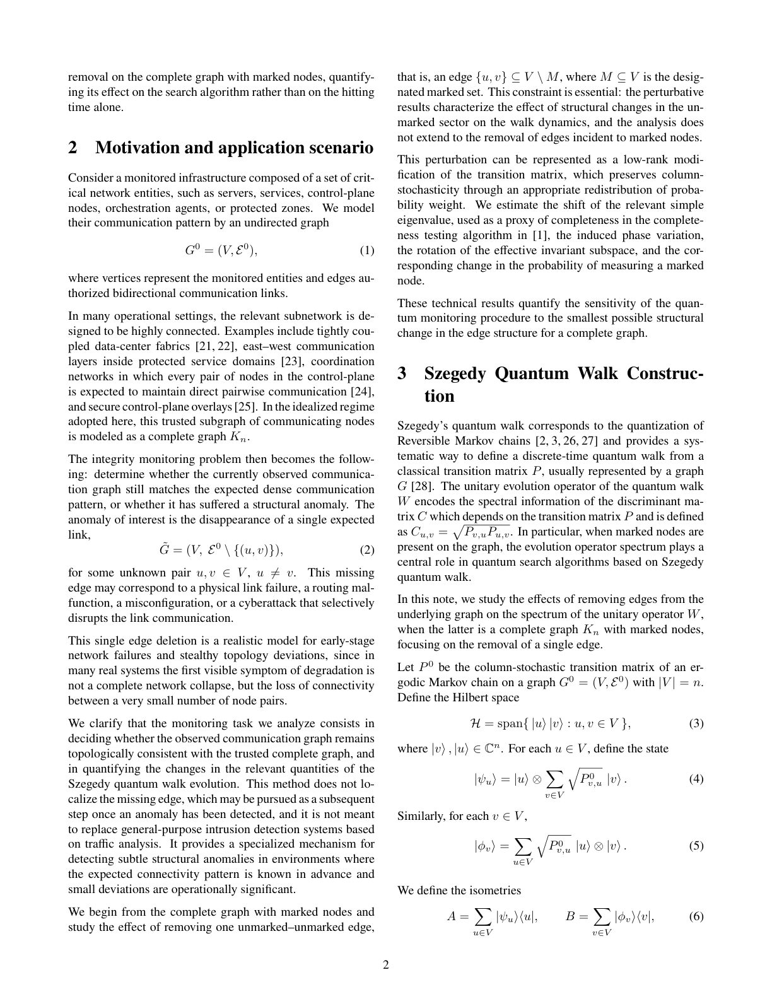
<figcaption class="paper-figure-caption"><b>Fig 1.</b> Low-resolution page preview, page 2</figcaption>
</figure>
<figure class="paper-figure-card">
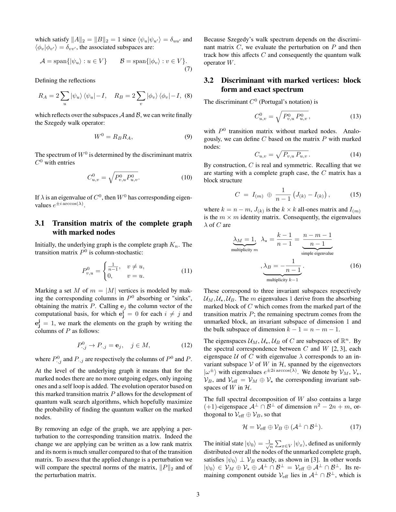
<figcaption class="paper-figure-caption"><b>Fig 2.</b> Low-resolution page preview, page 3</figcaption>
</figure>
<figure class="paper-figure-card">
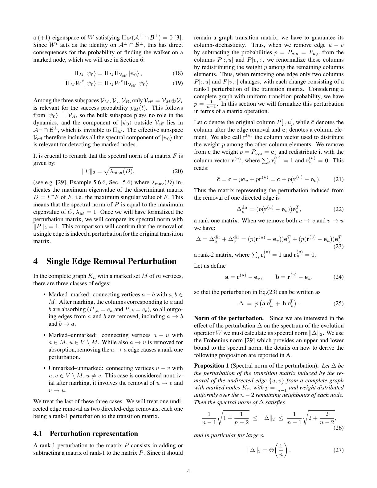
<figcaption class="paper-figure-caption"><b>Fig 3.</b> Low-resolution page preview, page 4</figcaption>
</figure>
<figure class="paper-figure-card">
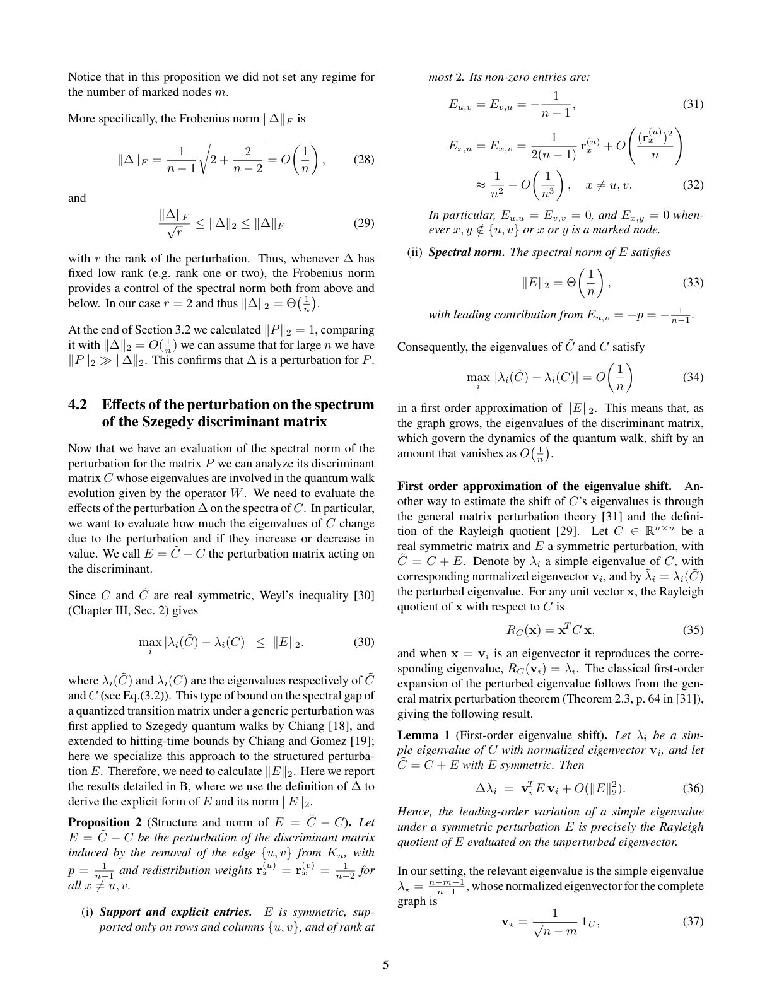
<figcaption class="paper-figure-caption"><b>Fig 4.</b> Low-resolution page preview, page 5</figcaption>
</figure>
<figure class="paper-figure-card">
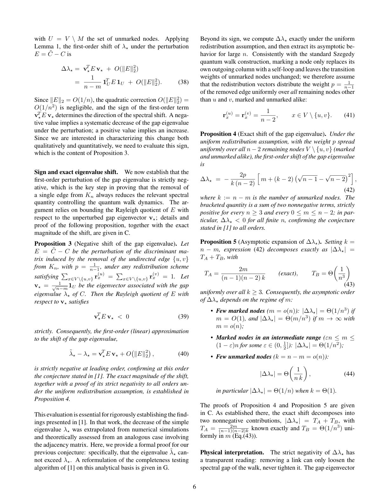
<figcaption class="paper-figure-caption"><b>Fig 5.</b> Low-resolution page preview, page 6</figcaption>
</figure>
</div>
<p><strong>Summary.</strong> This paper provides a deep theoretical analysis of detecting single link failures in dense quantum networks modeled by the Szegedy quantum walk. By applying perturbation theory, the authors derive precise scaling laws showing how the loss of one edge causes measurable shifts in spectral quantities like eigenvalues and phases. These results establish fundamental limits for quantum-assisted topology integrity monitoring.</p>
<p><strong>Why it may be interesting.</strong> The rigorous quantification of detection limits based on spectral perturbations is highly relevant for understanding noise resilience in quantum communication protocols and network security.</p>
<details>
<summary>Detailed structure</summary>
<p><strong>Main problem.</strong> The paper develops a rigorous perturbative analysis to detect structural anomalies, specifically the removal of a single link, in dense quantum communication networks.</p>
<p><strong>Main result.</strong> It quantifies that this minimal perturbation causes predictable, small shifts ($\Theta(1/n^2)$) in spectral quantities like the gap eigenvalue and eigenphase shift, allowing for detection with high theoretical precision.</p>
<p><strong>Method.</strong> The analysis employs time-dependent perturbation theory applied to the Szegedy quantum walk operator, analyzing how low-rank modifications affect the spectrum of the system's discriminant matrix.</p>
<p><strong>Model / system.</strong> The model is a quantum walk executed on a complete graph ($K_n$) representing a dense communication network. The process uses the Szegedy quantum walk algorithm framework to test for link integrity.</p>
<p><strong>Key observables.</strong> Spectral norm of the perturbation ($\Theta(1/n)$), shift in the gap eigenvalue ($\Theta(1/n^2)$), eigenphase shift ($\Delta	heta^\star = \Theta(1/n^2)$), and change in success probability ($O(1/\sqrt{n})$).</p>
<p><strong>Important parameters / regimes.</strong> The analysis is most relevant in the regime where the number of marked nodes $m$ scales linearly with the total number of nodes, i.e., $m = \Theta(n)$.</p>
<p><strong>Assumptions / limitations.</strong> The primary assumption is that the anomaly is the removal of a single unmarked-unmarked edge, and the analysis relies on first-order perturbation theory for eigenvalue shifts.</p>
<p><strong>Paper structure.</strong> The paper builds from graph completeness testing to integrity monitoring. It analyzes the spectral consequences of removing an edge $\{u, v\} \subseteq V \setminus M$ by treating it as a small perturbation ($\Delta$) on the transition matrix $P$, leading to detailed calculations of eigenvalue shifts and success probability bounds.</p>
</details>
<details>
<summary>Abstract</summary>
<p>We present a rigorous perturbative analysis of the Szegedy quantum walk search algorithm on the complete graph with marked nodes, when a specific anomaly is present in the graph. This is motivated by the problem of monitoring the integrity of dense trusted communication networks with a quantum-assisted procedure. The topology of these networks is modeled as a complete graph, and the anomaly of interest is the disappearance of a single communication link which represents the minimal and spectrally hardest structural defect to detect. Building on the graph-completeness testing algorithm framework, we quantify how the removal of a single unmarked-unmarked edge propagates through the relevant spectral quantities of the Szegedy quantum walk. Denoting by $n$ the total number of nodes of the graph and by $m$ the number of marked nodes, we prove that the perturbation to the transition matrix has spectral norm $Θ(1/n)$, and that the gap eigenvalue undergoes a strictly negative first-order shift for every $n$ and every number of marked nodes $m$, providing a formal proof of a conjecture from our completeness testing algorithm work; in the regime $m = Θ(n)$ relevant for the search algorithm, this shift has magnitude $Θ(1/n^2)$. The corresponding eigenphase shift satisfies $Δθ_\star = Θ(1/n^2)$ in the same regime. We establish that the rotation angle of the effective subspace under this perturbation is $O(1/n)$ for $m = Θ(n)$. Finally, we bound the change in success probability to $O(1/\sqrt{n})$ in this same regime of marked nodes, and show that this bound is dominated by the geometric misalignment of the effective subspace rather than by the spectral shift of the eigenphase. These results provide both the theoretical foundations and the fundamental scaling limits of quantum walk-based topology integrity monitoring under minimal structural perturbations.</p>
</details>
<p><sub><a href="#top">↑ back to top</a></sub></p>
</details>
<h2 id="secondary-cond-mat-archives">Secondary cond-mat archives</h2>
<p><em>Papers from cond-mat.mtrl-sci, mes-hall, other, soft, supr-con. These archives are de-prioritized — they appear at the end regardless of relevance score.</em></p>
<h3 id="relevant-in-secondary-archives-20">Relevant in secondary archives (20)</h3>

<p><a id="paper-2607.19157"></a></p>
<h3 id="direct-spatiotemporal-imaging-of-charge-carrier-dynamics-in-operative-semiconductor-devices"><a href="http://arxiv.org/abs/2607.19157v1">Direct Spatiotemporal Imaging of Charge Carrier Dynamics in Operative Semiconductor Devices</a></h3>
<p><strong>Authors:</strong> Adriano Cola, Antonio Valletta, Isabella Farella, Vaclav Dědič, Lorenzo Dominici<br>
<strong>Type:</strong> both · <strong>Category:</strong> other · <strong>PDF:</strong> <a href="https://arxiv.org/pdf/2607.19157v1">https://arxiv.org/pdf/2607.19157v1</a><br>
<strong>Analysis basis:</strong> full PDF text, analyzed in chunks
<strong>Topic relevance:</strong> 🔥 <code>quantum measurements</code> <strong>4/5</strong> · <code>methods for driven-dissipative</code> <strong>3/5</strong> · <code>non-equilibrium dynamics</code> <strong>3/5</strong> · <code>Keldysh / 2PI / non-Gaussian methods</code> <strong>2/5</strong> · <code>measurement-induced transitions</code> <strong>2/5</strong> · <code>quantum optics experiment</code> <strong>2/5</strong> · <code>spintronics-quantum-optics interface</code> <strong>2/5</strong> · <code>analog quantum simulation</code> <strong>1/5</strong> · <code>correlated / nonlocal dissipation</code> <strong>1/5</strong> · <code>driven-dissipative phase transition</code> <strong>1/5</strong> · <code>non-equilibrium universality</code> <strong>1/5</strong></p>
<div class="figure-strip-hint">↔ Scroll figures horizontally</div>
<div class="paper-figures-scroll">
<figure class="paper-figure-card">
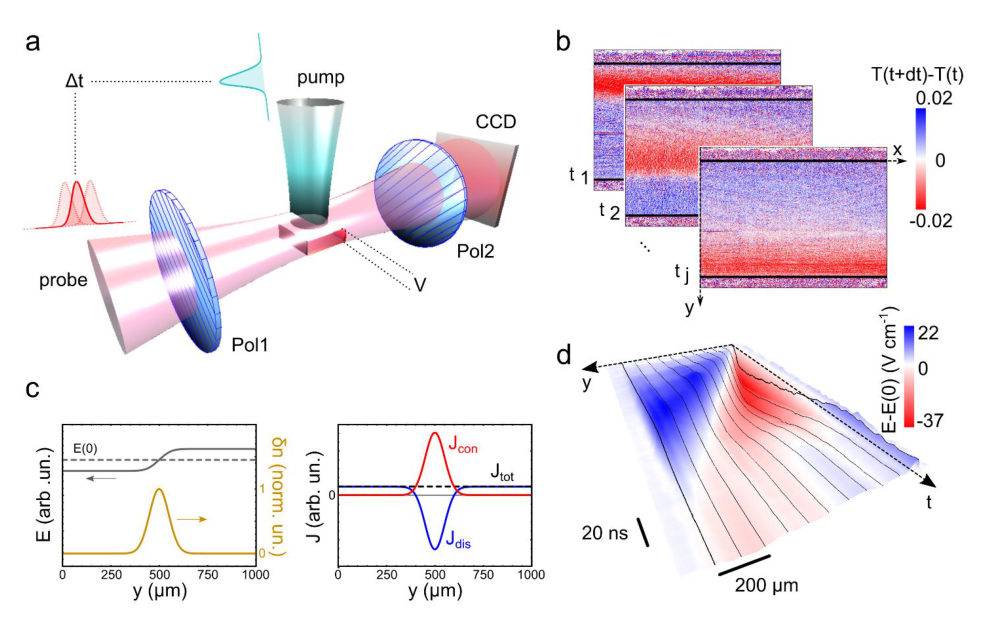
<figcaption class="paper-figure-caption"><b>Fig 1.</b> Fig. 1 Experimental setup and working principles. (a) Scheme of the working configuration. Two independent laser pulses are temporally shifted by means of an electronic delay and sent on the device to work as a probe and a pump beam. The device is kept at a given voltage V and placed between two crossed linear polarizers (Pol1 and Pol2). The probe beam crossing the sample and polarizers is imaged on a CCD camera. (b) Sequence of processed real-space images with the absolute transmittance variations at different time frames (t1, t2, … tj). (c) Representative profiles of electric field and charge cloud (left subpanel) and conduction, displacement and total current (right subpanel). The...</figcaption>
</figure>
<figure class="paper-figure-card">
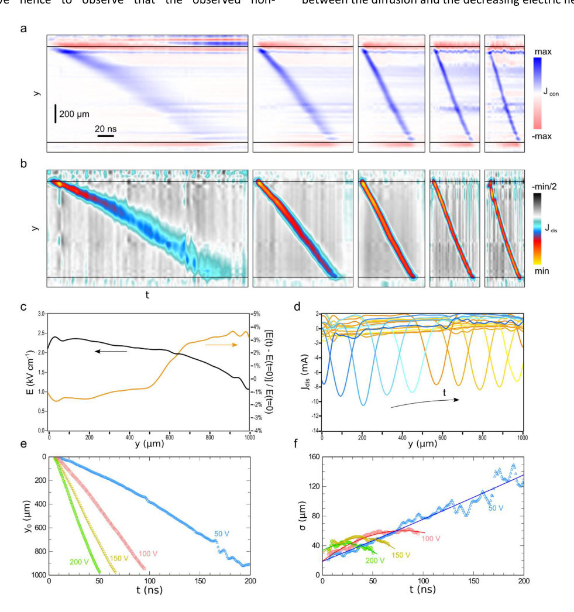
<figcaption class="paper-figure-caption"><b>Fig 2.</b> Fig. 2 CDPI experiments at low power and different voltages. (a) Time-space charts of the conduction current evaluated using the spatial derivative of the electric field. The charts refer to the applied voltages of 50 V, 100 V, 150 V, 200 V and 250 V, going left to right, respectively. The inner top and bottom horizontal solid lines represent the cathode (y = 0) and anode (y = 1000 m) position, respectively. The minimum on the colorbar has been kept fixed at minus the maximum value for the clarity and symmetry of representation (white areas correspond to a zero current). (b) Time-space charts of the displacement current evaluated from the temporal derivative of the electric field, for the...</figcaption>
</figure>
<figure class="paper-figure-card">
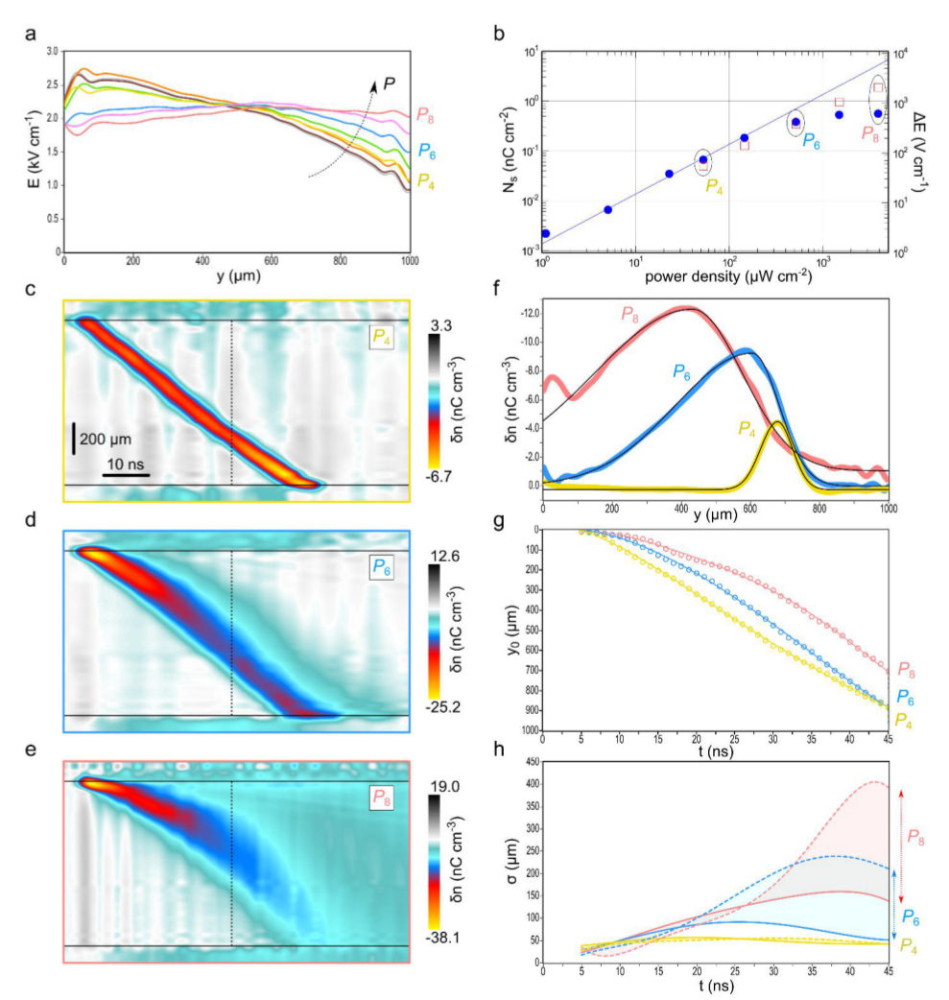
<figcaption class="paper-figure-caption"><b>Fig 3.</b> Fig. 3 CDPI experiments at increasing optical power. (a) Electric field profiles at initial time for different optical pump power density (from P1 = 1 µW cm-2 to P8 = 3900 µW cm-2, over the 1 cm2 area of the device). (b) Estimated travelling charge (filled blue circles) for the eight values of increasing power. The charge is evaluated in terms of the electric field difference ΔE at the two side of the clouds (at intermediate time). The collected charge is retrieved instead by time integrating the approximated current (empty red squares). (c,d,e) Time-space charts of the carriers’ cloud 𝛿𝑛𝑑𝑖𝑠𝑝𝑙(𝑦) at three optical powers (P4, P6 and P8, respectively). They are retrieved by applying Eq. (6)...</figcaption>
</figure>
<figure class="paper-figure-card">
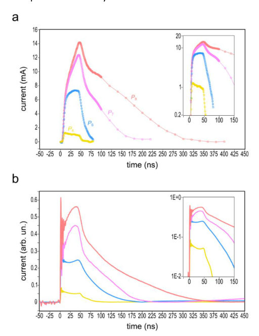
<figcaption class="paper-figure-caption"><b>Fig 4.</b> Fig. 4 Current dynamics. (a) Experimental current versus time at different powers calculated from the CDPI experiments using Eq. (4). (b) Independent current transients (CT) measurements by means of an external oscilloscope. The insets in the two panels show the currents on a semi-log scale. In summary, within its limits, the approximate current of Eq. (4) enables us to validate the CDPI&#x27;s key findings, which correlate the dynamics of the electric field — typically inaccessible to experiments — with the primary observable quantity of electronic devices: the external current. Remarkably, an all-optical experiment enables us to infer the dynamics of the internal electric field and the...</figcaption>
</figure>
<figure class="paper-figure-card">
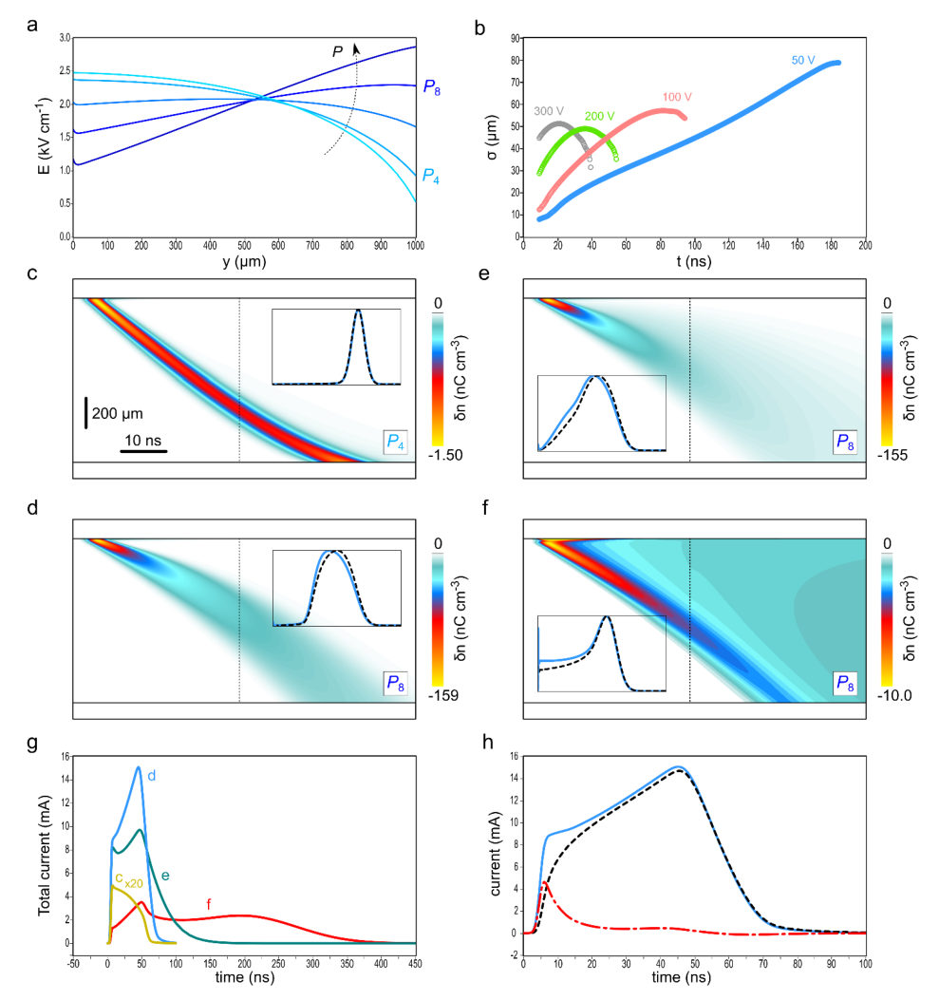
<figcaption class="paper-figure-caption"><b>Fig 5.</b> Fig. 5 Numerical simulations. (a) Initial field profiles prepared at different optical pump powers. The two labelled profiles correspond to the P4 and P8 power densities of the experiments. (b) Evolution of the cloud size extracted from the Gaussian fit of the simulations at different bias voltages and low power optical irradiation. (c,d) Complete time-space charts of the carrier cloud 𝛿𝑛𝑑𝑖𝑠𝑝𝑙(𝑦, 𝑡) in a low-power case (c) and high-power case (d), under an applied voltage of 200 V. (e,f) Time-space charts of the carrier cloud using the same high optical pump power of panel d but adding a trapping level. The two cases refer to a shallow level homogeneous in the bulk depth (e) and a surface...</figcaption>
</figure>
</div>

<p><strong>Summary.</strong> The paper introduces Carrier Dynamics by Pockels Imaging (CDPI), a novel, non-invasive method that uses the electro-optic effect to directly image how photogenerated charge carriers move inside semiconductor devices. By correlating these internal field measurements with external current readings, researchers can map fundamental transport processes like drift and diffusion in real time. This technique offers a powerful new tool for understanding device physics across diverse optoelectronic materials.</p>
<p><strong>Why it may be interesting.</strong> While focused on solid-state electronics, the core concept of using an external optical probe (Pockels effect) to map internal field dynamics—a non-invasive measurement technique—is highly relevant for studying open quantum systems or charge transfer in nanoscale devices where direct probing is difficult.</p>
<details>
<summary>Detailed structure</summary>
<p><strong>Main problem.</strong> Directly imaging charge carrier dynamics within active semiconductor devices is challenging because existing measurement techniques are often indirect or perturbative.</p>
<p><strong>Main result.</strong> The proposed technique, CDPI, successfully visualizes internal electron cloud evolution in real space while simultaneously correlating it with measurable conduction and displacement currents. This establishes a unified picture of carrier transport mechanisms like drift and diffusion.</p>
<p><strong>Method.</strong> The method uses Carrier Dynamics by Pockels Imaging (CDPI), which non-invasively probes the local electric field via the electro-optic effect to map photogenerated electron clouds.</p>
<p><strong>Model / system.</strong> The study is demonstrated in CdTe radiation detectors and is applicable to various optoelectronic materials like perovskites. The analysis models charge transport by relating the measured electric field variations to fundamental current components (conduction and displacement).</p>
<p><strong>Key observables.</strong> Electric field distribution $E(y, t)$, electron cloud density $\delta n$, conduction current ($I_{cond}$), and displacement current.</p>
<p><strong>Important parameters / regimes.</strong> Micrometre-scale spatial resolution and nanosecond temporal resolution; voltage biases ranging from 50 V to 200 V; varying optical irradiation power densities.</p>
<p><strong>Assumptions / limitations.</strong> The derivation of the total current often assumes negligible diffusion when relating it solely to electric field derivatives. The analysis relies on detailed device simulation parameters for material properties like trap levels and mobilities.</p>
<p><strong>Figures summary.</strong> Figures illustrate the experimental setup using pump-probe beams, time-space charts showing electric field differences, and profiles comparing internal charge cloud evolution with external measured currents (conduction/displacement).</p>
<p><strong>Paper structure.</strong> The paper introduces CDPI as a solution to direct imaging limitations. It details the physical principles linking EO measurements to current components, presents experimental demonstrations in CdTe, and discusses applicability across various semiconductor types.</p>
</details>
<details>
<summary>Abstract</summary>
<p>Understanding charge carrier dynamics within electronic devices is crucial, as it governs both the internal evolution of signals and the externally measurable current. Yet, direct imaging of these dynamics remains elusive: existing approaches are often indirect or inherently perturbative. Here, we introduce Carrier Dynamics by Pockels Imaging (CDPI), a sensitive, quantitative, and non-invasive method that enables direct access to internal charge dynamics. By probing the local electric field, CDPI visualizes photogenerated electron clouds in real space while simultaneously correlating their evolution with both conduction and displacement currents, thereby establishing a unified picture of carrier transport. The technique provides direct insight into fundamental mechanisms \textemdash including drift, diffusion, carrier-carrier interactions, trapping and detrapping \textemdash as well as the spatiotemporal evolution of carrier cloud morphology. Demonstrated in CdTe radiation detectors with micrometre-scale spatial resolution and nanosecond temporal resolution, CDPI is broadly applicable to systems exhibiting appreciable electro-optic responses. Beyond conventional semiconductors, the approach extends to organic, perovskite, and two-dimensional optoelectronic materials, offering a new paradigm for directly linking internal carrier dynamics to device-level functionality.</p>
</details>
<p><sub><a href="#top">↑ back to top</a></sub></p>

<p><a id="paper-2607.18916"></a></p>
<h3 id="bridging-distributed-quantum-materials-via-multi-hotspot-vacuum-remote-cooper-pairing-and-andreev-teleportation"><a href="http://arxiv.org/abs/2607.18916v1">Bridging distributed quantum materials via multi-hotspot vacuum: remote Cooper pairing and Andreev teleportation</a></h3>
<p><strong>Authors:</strong> Zuzhang Lin, Zhijian Song, Chengxin Xiao, Wang Yao<br>
<strong>Type:</strong> theory · <strong>Category:</strong> strongly correlated electrons · <strong>PDF:</strong> <a href="https://arxiv.org/pdf/2607.18916v1">https://arxiv.org/pdf/2607.18916v1</a><br>
<strong>Analysis basis:</strong> full PDF text, analyzed in chunks
<strong>Topic relevance:</strong> 🔥 <code>analog quantum simulation</code> <strong>4/5</strong> · 🔥 <code>correlated cavity matter</code> <strong>4/5</strong> · <code>entanglement &amp; information structure</code> <strong>3/5</strong> · <code>exotic spin models in light-matter</code> <strong>3/5</strong> · <code>Tavis-Cummings &amp; cavity-many-emitter</code> <strong>2/5</strong> · <code>Keldysh / 2PI / non-Gaussian methods</code> <strong>1/5</strong> · <code>correlated / nonlocal dissipation</code> <strong>1/5</strong> · <code>driven-dissipative phase transition</code> <strong>1/5</strong> · <code>methods for driven-dissipative</code> <strong>1/5</strong> · <code>non-equilibrium dynamics</code> <strong>1/5</strong></p>
<div class="figure-strip-hint">↔ Scroll figures horizontally</div>
<div class="paper-figures-scroll">
<figure class="paper-figure-card">
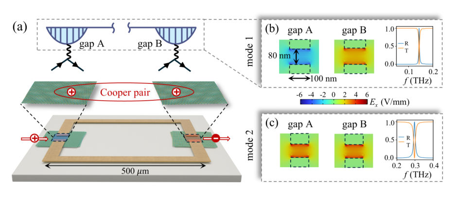
<figcaption class="paper-figure-caption"><b>Fig 1.</b> Figure 1. Distributed mesoscopic matter at multiple hotspots of a cavity mode, bridged via its vacuum fluctuations. (a) Schematic of a metallic ring THz resonator with two split gaps, each proximitized by a moiré superlattice. A cavity mode has a spatial profile spread across both gaps, and its vacuum fluctuations can mediate an attractive interaction between carriers across the two gaps, leading to remote Cooper pairing. This pairing enables an Andreev teleportation process: injection of a hole into gap A results in an electron ejection from gap B. (b), (c) Spatial profiles and resonance spectra of the two lowest cavity modes for an exemplary square ring resonator where the two split gaps...</figcaption>
</figure>
<figure class="paper-figure-card">
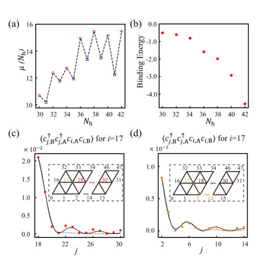
<figcaption class="paper-figure-caption"><b>Fig 2.</b> Figure 2. Many-body ground state under cavity-vacuum- mediated interaction—fixed-number DMRG calculations. (a) Chemical potential 𝜇(𝑁ℎ) ≡𝐸(𝑁ℎ+ 1) −𝐸(𝑁ℎ) as a function of hole number 𝑁ℎ, where 𝐸(𝑁ℎ) is the ground-state energy of the two moiré superlattices (each of size 6 × 4 sites). For even 𝑁ℎ, holes are equally partitioned (𝑁ℎ∕2 per superlattice). For odd 𝑁ℎ, moiré A has one more hole than moiré B. (b) Binding energy defined as 𝜇(𝑁ℎ+1)−𝜇(𝑁ℎ) at even 𝑁ℎ. (c), (d) Inter-moiré pair–pair correla- tion ⟨𝑐† 𝑗,𝐵𝑐† 𝑗,𝐴𝑐𝑖,𝐴𝑐𝑖,𝐵⟩, with 𝑖being site 17 (highlighted in green color) and 𝑗varying along different trajectories (highlighted in red or or- ange color). Each moiré is of size 16 × 3 sites...</figcaption>
</figure>
<figure class="paper-figure-card">
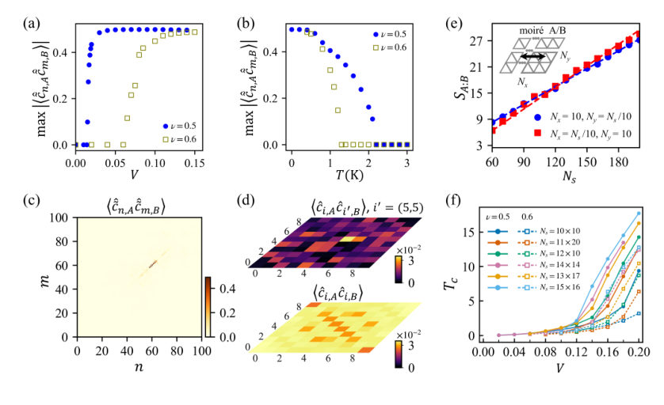
<figcaption class="paper-figure-caption"><b>Fig 3.</b> Figure 3. Remote pairing and distributed entanglement—mean-field solutions on larger-scale superlattices. (a) Maximum pairing am- plitude |⟨̂̃𝑐𝑛,𝐴̂̃𝑐𝑚,𝐵⟩| at zero temperature, as function of the cavity-vacuum-mediated interaction 𝑉. Pairing emerges above a critical interaction strength that depends on the filling factor 𝜈. (b) Temperature dependence of the maximum pairing amplitude at 𝑉= 0.15, exhibiting a critical temperature 𝑇𝑐. (c), (d) Pairing amplitude at zero temperature, in the single-particle eigenbasis (c), and in real space (d). The eigenbasis repre- sentation shows pronounced pairing near the Fermi level. In (a-d), each moiré is of 𝑁𝑠= 10 × 10 sites. (e) Entanglement entropy...</figcaption>
</figure>
<figure class="paper-figure-card">
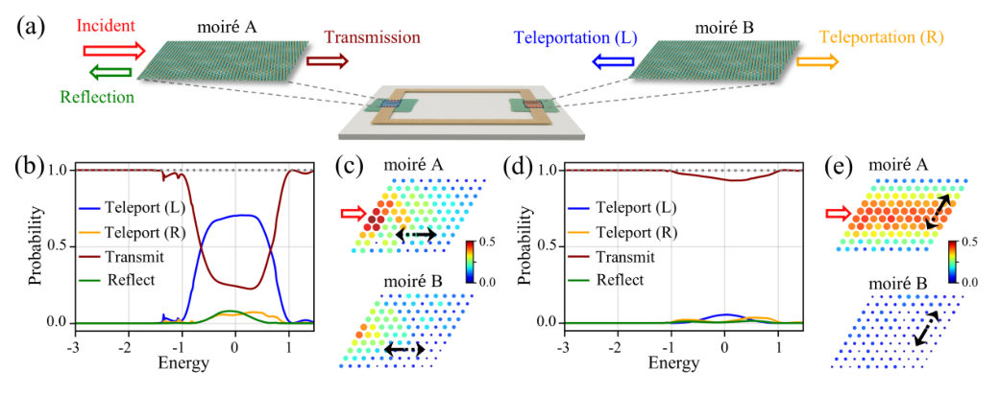
<figcaption class="paper-figure-caption"><b>Fig 4.</b> Figure 4. Andreev Teleportation. (a) Schematic of the local scattering channels (normal reflection and transmission) and the remote Andreev teleportation channels (particle–hole interconversion across the two split gaps). (b) Scattering probabilities as functions of incident energy, with the cavity field polarized along the incident direction. Inside the pairing gap, remote teleportation dominates over the local scattering channels. (c) The wavefunction of a scattering state at incident energy 𝐸= 0, distributed across the moiré superlattices in both split gaps. (d), (e) Similar plots for incidence with an angle of 60◦relative to the cavity field polarization. The calculations are performed...</figcaption>
</figure>
</div>

<p><strong>Summary.</strong> The paper proposes using the vacuum fluctuations within a multi-gap superconducting resonator to couple distant mesoscopic quantum materials. This coupling mediates an attractive interaction, inducing remote Cooper pairing across millimeter gaps. The resulting correlated state allows for 'Andreev teleportation,' demonstrating emergent nonlocal functionalities in engineered quantum networks.</p>
<p><strong>Why it may be interesting.</strong> This work directly bridges cavity QED concepts (vacuum mediation) with strongly correlated electron physics (superconductivity in moiré lattices), providing a mechanism for engineered long-range quantum interactions.</p>
<details>
<summary>Detailed structure</summary>
<p><strong>Main problem.</strong> To create an unprecedented many-body quantum system by correlating mesoscopic quantum matter distributed over spatially separated nodes using vacuum fluctuations.</p>
<p><strong>Main result.</strong> The cavity vacuum mediates remote Cooper pairing and enables Andreev teleportation across macroscopic separations, suggesting a paradigm for nonlocal quantum networks.</p>
<p><strong>Method.</strong> Theoretical modeling involving effective Hamiltonians derived via Schrieffer-Wolff transformation, analyzed using DMRG, exact diagonalization, and Bogoliubov–de Gennes mode-matching.</p>
<p><strong>Model / system.</strong> The system uses a multi-gap split-ring resonator (SRR) to couple two spatially separated moiré superlattices. The coupling mechanism is the virtual exchange of photons in the cavity vacuum field.</p>
<p><strong>Key observables.</strong> Remote Cooper pairing, Andreev teleportation probability, and entanglement entropy scaling linearly with lattice area.</p>
<p><strong>Important parameters / regimes.</strong> Millimeter-scale separation between gaps; deep-subwavelength hotspot confinement; interaction strength $V_{\lambda} \propto 1/\omega_{\lambda}^2$.</p>
<p><strong>Assumptions / limitations.</strong> The analysis primarily focuses on cavity-mediated interactions, neglecting intra-gap Coulomb repulsion effects on the inter-gap process.</p>
<p><strong>Figures summary.</strong> Figures illustrate the setup showing mediated pairing and teleportation; other figures detail resonance spectra, binding energy oscillations, and the probability of Andreev teleportation versus local scattering channels.</p>
<p><strong>Paper structure.</strong> The paper establishes the physical platform (SRR with multiple hotspots), derives an effective Hamiltonian from vacuum coupling, calculates key superconducting diagnostics (pairing amplitude, binding energy) using DMRG/ED, and finally demonstrates nonlocal functionality via Andreev teleportation probability calculations.</p>
</details>
<details>
<summary>Abstract</summary>
<p>We introduce an architecture where mesoscopic quantum matter distributed over spatially separated nodes can be correlated in equilibrium, creating an unprecedented form of many-body quantum system. Central to the design is a multi-gap split-ring resonator (SRR) where the cavity photon has multiple hot spots -- each with deep-subwavelength volume at a split gap and separated by millimeter-scale distances. The cavity's vacuum fluctuations can then mediate a many-body interaction that bridges the distributed quantum materials embedded in the multiple gaps, coupling them into a single correlated mesoscopic system in equilibrium. As an example, we consider a THz SRR with two split gaps, each proximitized to a metallic moiré superlattice, where virtual exchange of a photon in the cavity vacuum mediates a current-current interaction across the gaps. The inherent attractive interaction channels lead to remote Cooper pairing reminiscent of mesoscopic superconductivity, demonstrated with density matrix renormalization group and exact diagonalization calculations. With the two constituents of a Cooper pair now paired across a millimeter-scale separation, a hole incident at one split gap can be converted into an outgoing electron at the remote gap, a process we term Andreev teleportation. The entanglement entropy between the two mesoscopic superlattices is shown to scale linearly with the area (total number of sites) of the mesoscopic lattice. Our results suggest an intriguing paradigm for equilibrium quantum networks of mesoscopic matter that enable emergent nonlocal functionalities and distributed quantum resources.</p>
</details>
<p><sub><a href="#top">↑ back to top</a></sub></p>

<p><a id="paper-2607.18592"></a></p>
<h3 id="domain-wall-motion-in-a-polycrystalline-vortex-lattice"><a href="http://arxiv.org/abs/2607.18592v1">Domain wall motion in a polycrystalline vortex lattice</a></h3>
<p><strong>Authors:</strong> Malcolm Durkin, Emily Waite, Taylor L. Hughes, Nadya Mason<br>
<strong>Type:</strong> both · <strong>Category:</strong> disordered systems and neural networks · <strong>PDF:</strong> <a href="https://arxiv.org/pdf/2607.18592v1">https://arxiv.org/pdf/2607.18592v1</a><br>
<strong>Analysis basis:</strong> full PDF text, analyzed in chunks
<strong>Topic relevance:</strong> 🔥 <code>Frenkel-Kontorova</code> <strong>4/5</strong> · <code>analog quantum simulation</code> <strong>3/5</strong> · <code>driven-dissipative phase transition</code> <strong>3/5</strong> · <code>methods for driven-dissipative</code> <strong>3/5</strong> · <code>non-equilibrium dynamics</code> <strong>2/5</strong> · <code>non-equilibrium universality</code> <strong>2/5</strong> · <code>Keldysh / 2PI / non-Gaussian methods</code> <strong>1/5</strong> · <code>correlated / nonlocal dissipation</code> <strong>1/5</strong> · <code>scars &amp; prethermalization</code> <strong>1/5</strong></p>
<div class="figure-strip-hint">↔ Scroll figures horizontally</div>
<div class="paper-figures-scroll">
<figure class="paper-figure-card">
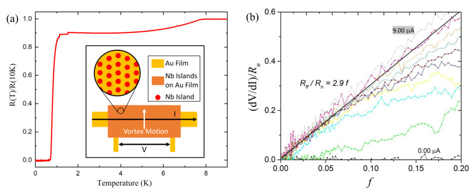
<figcaption class="paper-figure-caption"><b>Fig 1.</b> FIG. 1. I-V measurements. (a) Resistance vs temperature for a 490 nm edge-to-edge spaced array, showing the superconducting transition. Inset shows the four-point measurement configuration. (b) Normalized differential resistance 𝑑𝑉/𝑑𝐼 at 1 μA current intervals as a function magnetic filling f. As current increases at low fillings, there is a rapid transition from 𝑑𝑉/𝑑𝐼= 0 to flux flow resistance (black line, 𝑅𝑓𝑓/𝑅𝑁). (c) 𝑑𝑉/𝑑𝐼 vs f at 0.5 μA current intervals, for a larger range than (b). At higher fillings, dips associated with commensurate fillings are visible at 𝑓= 1/6, 1/4, 1/3, and 1/2. Intermediate clusterings of lines are visible at 𝑓= 0.20 and 𝑓= 0.35. (d) 𝑑𝑉/𝑑𝐼 vs I. The black...</figcaption>
</figure>
<figure class="paper-figure-card">
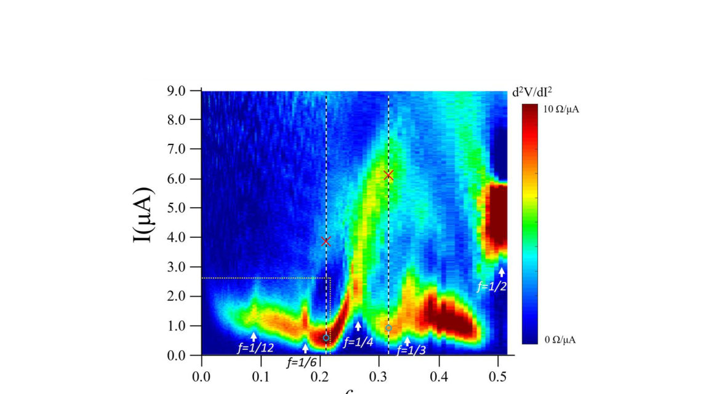
<figcaption class="paper-figure-caption"><b>Fig 2.</b> FIG. 2. 𝑑2𝑉/𝑑𝐼2 as a function of current and frustration. Transition steps can be mapped using 𝑑2𝑉/𝑑𝐼2, with higher values (brighter colors) corresponding to a transition step. Commensurate fillings are marked with white arrows and undergo a single transition. Examples of incommensurate fillings are marked with a dashed line and undergo two transitions, the first marked with a blue circle and the second marked with a red X. The region marked in a yellow dashed box in the lower left corner is simulated in Figure 4 (a).</figcaption>
</figure>
<figure class="paper-figure-card">
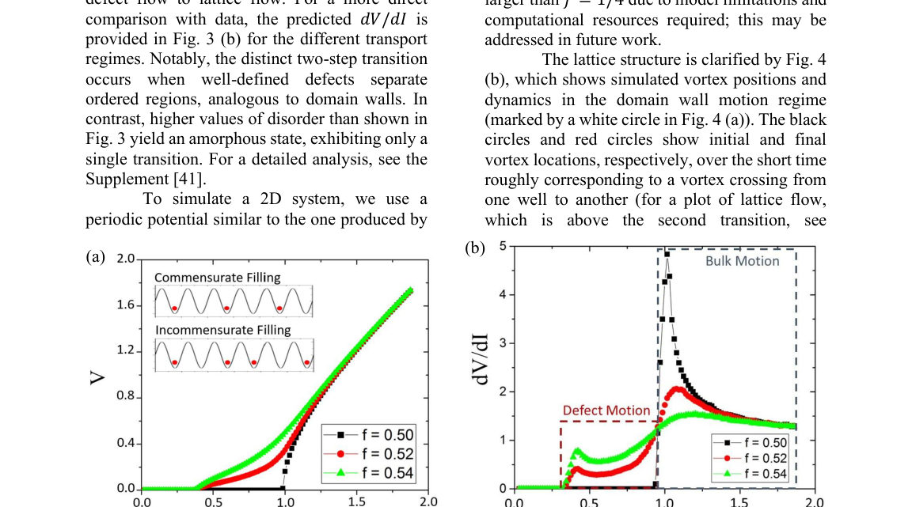
<figcaption class="paper-figure-caption"><b>Fig 3.</b> FIG. 3. One-dimensional simulation of array. (a) Simulated I-V behavior for commensurate (𝑓= 0.5) and incommensurate fillings (𝑓= 0.52,0.54). Top inset shows the half filling arrangement. Bottom inset shows an incommensurate filling with defects in the form of vortices in adjacent wells. (b) Simulated 𝑑𝑉/𝑑𝐼 measurements. At commensurate values, the system rapidly transitions from pinned to bulk vortex motion. As field is increased (𝑓= 0.52, 0.54), defects are added. This results in a transition from pinned to defect motion to bulk vortex motion. Id0 is the de-pinning current in the single particle limit.</figcaption>
</figure>
<figure class="paper-figure-card">

<figcaption class="paper-figure-caption"><b>Fig 4.</b> FIG. 4. 2D simulation of triangular array. (a) Simulated 𝑑2𝑉/𝑑𝐼2 within region indicated by yellow dashed box in Figure 2. At 𝑓= 1/6, a second transition splits off from the de-pinning current when filling is increased. An incommensurate filling is shown with a dashed line. A blue circle at 𝐼/𝐼𝑑0 ≈0.3 shows the first transition. A grey X at 𝐼/𝐼𝑑0 ≈0.8 shows the second transition. Id0 is the de-pinning current in the single particle limit. Arrows on the right indicate the position of the grey X and blue circle. (b) Time evolution of vortex motion at 𝑓= 0.2 with an applied field perpendicular to the vortex plane shown and an applied current of 𝐼= 0.6 𝐼𝑑0 , for data shown as a black circle in...</figcaption>
</figure>
</div>

<p><strong>Summary.</strong> This paper experimentally and computationally investigates vortex motion in superconducting arrays under controlled disorder. The key finding is that the presence of disorder causes a two-step depinning transition, suggesting that the system's dynamics are governed by domain wall movement rather than simple glassy freezing. This provides direct evidence linking interface physics to transport phenomena in frustrated periodic systems.</p>
<p><strong>Why it may be interesting.</strong> The work provides a concrete physical realization where concepts from disordered systems—like pinning and interface physics—manifest in measurable transport signatures, offering insights applicable to understanding complex energy landscapes in many-body quantum systems.</p>
<details>
<summary>Detailed structure</summary>
<p><strong>Main problem.</strong> The study investigates how disorder affects crystalline superconducting vortex lattices, specifically determining if this leads to glassy states or domain fragmentation via mobile interfaces.</p>
<p><strong>Main result.</strong> The authors observe a two-step depinning transition in incommensurate fillings, which is consistent with interface-dominated motion characteristic of a polycrystalline vortex lattice rather than homogeneous glassy dynamics.</p>
<p><strong>Method.</strong> The research combines experimental measurements (I-V curves and differential resistance) on superconducting island arrays with molecular dynamics simulations using a Langevin equation approach.</p>
<p><strong>Model / system.</strong> The system is superconducting island arrays hosting an Abrikosov vortex lattice. Disorder is controlled by tuning the magnetic field away from commensurate fillings, creating frustration in the periodic pinning potential.</p>
<p><strong>Key observables.</strong> Two-step depinning transition in differential resistance (dI/dV), flux flow resistance ($R_{ff}$), and the splitting of single transitions into two distinct steps.</p>
<p><strong>Important parameters / regimes.</strong> Filling fraction ($f$), which dictates commensurability; applied current ($I$); and lattice stiffness ratios ($B/A$) in simulations.</p>
<p><strong>Assumptions / limitations.</strong> The analysis assumes that the observed intermediate transport regime is governed by domain wall motion separating ordered crystalline domains.</p>
<p><strong>Figures summary.</strong> Figures show I-V curves demonstrating single vs. two-step transitions based on filling factor; simulation results compare defect structures for different lattice stiffnesses, and field sweeping history reveals pinning effects near commensurate fillings.</p>
<p><strong>Paper structure.</strong> The paper progresses by first establishing the experimental observation of a two-step transition in incommensurate regimes (Experiment). It then uses molecular vortex models to simulate this behavior, showing how single transitions split into two as disorder increases (Simulation/Theory). Finally, it explores the role of lattice stiffness and field history dependence to solidify the domain wall interpretation.</p>
</details>
<details>
<summary>Abstract</summary>
<p>Disorder fundamentally reshapes how crystalline systems respond to external forces, yet it remains unclear whether disorder drives interacting lattices toward glassy states or instead fragments them into domains separated by mobile interfaces. Here, we investigate vortex motion in superconducting island arrays, where disorder is introduced in a controlled manner by tuning the magnetic field away from commensurate vortex fillings. By driving vortices with an applied current, we observe a two-step depinning transition at incommensurate fillings. Comparison with molecular vortex model simulations shows that this intermediate regime is consistent with domain wall motion in a polycrystalline vortex lattice. While two-step depinning has been explored theoretically in driven periodic systems, direct experimental evidence linking this behavior to interface-dominated vortex motion has been lacking. Our results demonstrate that disordered, interacting vortex systems with strong periodic pinning can favor interface physics over homogeneous glassy dynamics.</p>
</details>
<p><sub><a href="#top">↑ back to top</a></sub></p>

<p><a id="paper-2607.19242"></a></p>
<h3 id="time-resolved-arpes-in-pumped-excitonic-systems-floquet-physics-induced-by-excitonic-fields"><a href="http://arxiv.org/abs/2607.19242v1">Time-resolved ARPES in pumped excitonic systems: Floquet physics induced by excitonic fields</a></h3>
<p><strong>Authors:</strong> Amir Eskandari-asl, Adolfo Avella<br>
<strong>Type:</strong> theory · <strong>Category:</strong> strongly correlated electrons · <strong>PDF:</strong> <a href="https://arxiv.org/pdf/2607.19242v1">https://arxiv.org/pdf/2607.19242v1</a><br>
<strong>Analysis basis:</strong> full PDF text, analyzed in chunks
<strong>Topic relevance:</strong> 🔥 <code>methods for driven-dissipative</code> <strong>4/5</strong> · 🔥 <code>non-equilibrium dynamics</code> <strong>4/5</strong> · <code>Keldysh / 2PI / non-Gaussian methods</code> <strong>3/5</strong> · <code>driven-dissipative phase transition</code> <strong>3/5</strong> · <code>non-equilibrium universality</code> <strong>2/5</strong> · <code>analog quantum simulation</code> <strong>1/5</strong> · <code>correlated cavity matter</code> <strong>1/5</strong></p>
<div class="figure-strip-hint">↔ Scroll figures horizontally</div>
<div class="paper-figures-scroll">
<figure class="paper-figure-card">

<figcaption class="paper-figure-caption"><b>Fig 1.</b> Figure 1. Equilibrium properties of the two-band model. (a) Non-interacting band structure of the two-band model along a high-symmetry path in the Brillouin zone. (b) Equilib- rium normalized off-diagonal HF self-energy at the Γ point, ˜∆Γ, as a function of the Coulomb interaction strength V and the screening factor κ. The boundary between the semicon- ducting phase ( ˜∆Γ = 0) and the excitonic insulator phase ( ˜∆Γ ̸= 0) is visible. (c) Main equilibrium excitonic energy, ℏωexc, in the semiconducting phase as a function of V and κ. (d) Fourier-transformed excitonic field, ˜∆Γ(ω), as a function of V and ℏω for a fixed screening factor κ = 0.2, showing the main excitonic mode and a weaker...</figcaption>
</figure>
<figure class="paper-figure-card">

<figcaption class="paper-figure-caption"><b>Fig 2.</b> Figure 2. Results for V = 6 eV, semiconducting phase. (a), (c), (e) Post-pump TR-ARPES signal at the Γ point as a function of pump frequency for pump amplitudes A0 = 0.1, 0.25, and 0.5 V · fs/nm, respectively. Horizontal dashed lines mark CB and VB energies at Γ; vertical short-dashed lines indicate the pump frequency resonant with the equilibrium band gap at Γ. (b), (d), (f) Corresponding amplitude | ˜∆Γ(ω)| as a function of ωpu, and ω. Horizontal gray lines indicate the equilibrium excitonic energy from Fig. 1(c), and vertical short-dashed lines are similar to the other panels.</figcaption>
</figure>
<figure class="paper-figure-card">

<figcaption class="paper-figure-caption"><b>Fig 3.</b> Figure 3. Results for V = 6 eV, semiconducting phase. (a) Time evolution of the real and imaginary parts of ˜∆Γ(t) for the high-intensity case (A0 = 0.5 V · fs/nm) with pump frequency ℏωpu = 1.35 eV. Vertical dashed lines indicate t = ±τpu = ±10 fs, marking the pump-pulse duration. (b) Corresponding post-pump amplitude | ˜∆Γ(ω)| as a function of frequency, showing the main exciton-field oscillation peak.</figcaption>
</figure>
<figure class="paper-figure-card">

<figcaption class="paper-figure-caption"><b>Fig 4.</b> Figure 4. Results for V = 6 eV, semiconducting phase. k-resolved post-pump TR-ARPES signal along the high- symmetry path in the BZ for the large pump amplitude A0 = 0.5 V·fs/nm, corresponding to vertical cuts in Fig. 2(e). (a) ℏωpu = 1.35 eV, resonant with the excitonic frequency, showing a strong exciton-field-induced Floquet sideband par- allel to the VB. (b) ℏωpu = 1.94 eV, slightly above the band gap at Γ, showing band-resonance-induced sidebands and level splitting near Γ. (c) ℏωpu = 2.24 eV, with resonant k- points farther away from Γ, yielding weaker band-resonance- induced sidebands. (d) ℏωpu = 3.2 eV, with resonant k-points very far from Γ, producing very weak...</figcaption>
</figure>
<figure class="paper-figure-card">

<figcaption class="paper-figure-caption"><b>Fig 5.</b> Figure 5. Results for V = 15 eV, excitonic-insulator phase. (a), (c), (e) Post-pump TR-ARPES signal at the Γ point as a function of pump frequency ℏωpu for the excitonic-insulator phase (V = 6 eV, κ = 0.2) and pump amplitudes A0 = 0.1, 0.25, and 0.5 V · fs/nm, respectively. Black horizontal dashed lines mark the noninteracting CB and VB energies at Γ; red horizontal dashed lines mark the interacting band energies. (b), (d), (f) Corresponding amplitude | ˜∆Γ(ω)| as a function of ωpu, and ω. Vertical red dashed lines indicate the pump frequency resonant with the equilibrium band gap of the in- teracting system.</figcaption>
</figure>
</div>

<p><strong>Summary.</strong> The paper develops a sophisticated theoretical framework using the Dynamical Projective Operatorial Approach to simulate how excitonic systems behave under intense, time-varying pump pulses. By including electron-electron interactions via Hartree-Fock theory, the authors predict and analyze distinct Floquet sidebands arising from coherent oscillations of the internal excitonic order parameter. This work provides a powerful tool for interpreting ultrafast spectroscopic measurements in correlated materials.</p>
<p><strong>Why it may be interesting.</strong> This work is highly relevant as it models non-equilibrium many-body physics (excitons) driven by time-dependent fields (pumping), generating characteristic Floquet signatures that can be measured experimentally. The use of DPOA for ultrafast correlation effects is a key theoretical contribution.</p>
<details>
<summary>Detailed structure</summary>
<p><strong>Main problem.</strong> The study focuses on understanding time-resolved photoemission spectroscopy (TR-ARPES) in excitonic systems subjected to external pumping fields, specifically investigating Floquet physics induced by internal excitonic coherence.</p>
<p><strong>Main result.</strong> The authors show that when the pump frequency matches an excitonic mode, coherent oscillations persist after the pulse, generating distinct Floquet sidebands unique to the excitonic field. They also establish DPOA as a robust method for simulating these ultrafast dynamics.</p>
<p><strong>Method.</strong> The theoretical framework utilizes the Dynamical Projective Operatorial Approach (DPOA) combined with the Hartree-Fock approximation to treat Coulomb electron-electron interactions in an out-of-equilibrium setting.</p>
<p><strong>Model / system.</strong> The model is a prototypical two-dimensional, two-band semiconductor system. The Hamiltonian includes non-interacting terms and a Coulomb interaction term treated via HF decoupling, allowing for the study of excitonic bound states formation.</p>
<p><strong>Key observables.</strong> TR-ARPES spectrum; excitonic order parameter oscillations; Floquet sidebands (distinguishing between pump-field vs. exciton-field origin); equilibrium phase diagram.</p>
<p><strong>Important parameters / regimes.</strong> Coulomb interaction strength/range; pump frequency resonance with an excitonic mode; dipole asymmetry ($D$).</p>
<p><strong>Assumptions / limitations.</strong> The primary approximations are the use of the Hartree-Fock (HF) approximation for Coulomb interactions and solving the time evolution using DPOA.</p>
<p><strong>Figures summary.</strong> Figure 8 compares post-pump TR-ARPES signals at the $\Gamma$ point, demonstrating that dipole asymmetry ($D$) is crucial for observing exciton-field-induced Floquet sidebands in both semiconducting and excitonic-insulator phases.</p>
<p><strong>Paper structure.</strong> The paper develops by first introducing the theoretical necessity of studying TR-ARPES in pumped systems. It then details the DPOA formalism, extending it to include HF interactions to model exciton formation and subsequent out-of-equilibrium dynamics under resonant pumping conditions.</p>
</details>
<details>
<summary>Abstract</summary>
<p>We develop a theoretical framework based on the Dynamical Projective Operatorial Approach (DPOA) to study the time- and angle-resolved photoemission spectroscopy (TR-ARPES) of pumped excitonic systems. Including Coulomb electron-electron interactions at the Hartree-Fock (HF) level, our formalism captures the formation of excitonic bound states under the application of pump pulses. Considering a prototypical two-dimensional two-band semiconductor, we analyze the equilibrium phase diagram, which shows the expected transition from a semiconducting to an excitonic-insulator phase as the Coulomb interaction strength or its range increase. Out of equilibrium, we find that when the pump frequency is resonant with an excitonic mode, coherent oscillations of the excitonic order parameter persist after the pump pulse subsides and give rise to clear Floquet sidebands in the TR-ARPES spectrum. These exciton-field-induced sidebands are distinct from those originating from the pump laser field. We also identify band-resonance-induced sidebands arising from residual coherences at momenta where the band gap is resonant with the pump frequency. Finally, we analyze the local Coulomb interaction limit. Our results corroborate recent experimental observations of exciton-field-induced Floquet-like sidebands and establish DPOA as an efficient and accurate method for simulating ultrafast phenomena in interacting electron systems.</p>
</details>
<p><sub><a href="#top">↑ back to top</a></sub></p>

<p><a id="paper-2607.18995"></a></p>
<h3 id="topological-foundations-of-multi-field-instabilities-in-continua-part-1-foundations-part-2analytical-formulation-for-1-d-spin-chains-part-3-numerical-upscaling"><a href="http://arxiv.org/abs/2607.18995v1">Topological Foundations of Multi-Field Instabilities in Continua: Part 1: Foundations Part 2:Analytical Formulation for 1-D Spin Chains Part 3: Numerical Upscaling</a></h3>
<p><strong>Authors:</strong> Klaus Regenauer-Lieb, Francois Nicot, Amir Saker<br>
<strong>Type:</strong> theory · <strong>Category:</strong> statistical mechanics · <strong>PDF:</strong> <a href="https://arxiv.org/pdf/2607.18995v1">https://arxiv.org/pdf/2607.18995v1</a><br>
<strong>Analysis basis:</strong> full PDF text, analyzed in chunks
<strong>Topic relevance:</strong> <code>driven-dissipative phase transition</code> <strong>3/5</strong> · <code>methods for driven-dissipative</code> <strong>3/5</strong> · <code>non-equilibrium dynamics</code> <strong>3/5</strong> · <code>non-equilibrium universality</code> <strong>2/5</strong> · <code>Frenkel-Kontorova</code> <strong>1/5</strong> · <code>Keldysh / 2PI / non-Gaussian methods</code> <strong>1/5</strong> · <code>analog quantum simulation</code> <strong>1/5</strong> · <code>correlated / nonlocal dissipation</code> <strong>1/5</strong></p>
<div class="figure-strip-hint">↔ Scroll figures horizontally</div>
<div class="paper-figures-scroll">
<figure class="paper-figure-card">

<figcaption class="paper-figure-caption"><b>Fig 1.</b> Figure 1: Spectral topology of the circulation matrix L for even (N = 2) and odd (N = 3)</figcaption>
</figure>
<figure class="paper-figure-card">

<figcaption class="paper-figure-caption"><b>Fig 2.</b> Figure 2: The Onsager-Casimir decomposition of the constitutive operator A = D+L. Left:</figcaption>
</figure>
<figure class="paper-figure-card">

<figcaption class="paper-figure-caption"><b>Fig 3.</b> Figure 3: Geometric and algebraic duality in granular multi-field coupling: (a) Satake’s</figcaption>
</figure>
<figure class="paper-figure-card">

<figcaption class="paper-figure-caption"><b>Fig 4.</b> Figure 4: Hasse diagram of the VMC coupling hierarchy. Nodes are subsets of the three</figcaption>
</figure>
<figure class="paper-figure-card">

<figcaption class="paper-figure-caption"><b>Fig 5.</b> Figure 5: The Gateway mechanism: topological cause and dynamic effect in a (V, M, C)</figcaption>
</figure>
</div>

<p><strong>Summary.</strong> This work develops a topological theory to classify instabilities in granular materials by analyzing the structure of their multi-field coupling operators. It shows that the parity of coupled channels dictates whether the system possesses a structural null-mode, which can drive instability (the Gateway mechanism) even when classical failure indicators are not yet triggered.</p>
<p><strong>Why it may be interesting.</strong> The topological classification of instability mechanisms in passive matter provides a powerful analogy framework that could inform the understanding of non-equilibrium dynamics or dissipation thresholds in complex quantum many-body systems where symmetry breaking is key.</p>
<details>
<summary>Detailed structure</summary>
<p><strong>Main problem.</strong> The work establishes a parameter-free, topological classification for multi-field instabilities in granular continua, extending static rigidity concepts to dynamic, non-equilibrium processes.</p>
<p><strong>Main result.</strong> Instability can be predicted by the 'Gateway' mechanism—a structural null-mode appearing when the number of coupled channels ($N$) is odd—which drives transient amplification before classical failure criteria are met.</p>
<p><strong>Method.</strong> The analysis uses an augmented Onsager framework ($\mathbf{A} = \mathbf{D} + \mathbf{L}$), decomposing the constitutive operator into symmetric (dissipative) and skew-symmetric (conservative) parts, analyzed via spectral theory.</p>
<p><strong>Model / system.</strong> The system models granular continua using a discrete Volumetric–Mechanical–Configurational (VMC) contact formulation. The dynamics are governed by an augmented Onsager equation structure, which is then tested against linear Newton chain models and non-linear lattice extensions.</p>
<p><strong>Key observables.</strong> Gateway number ($\mathcal{G}_{
m inv}$), zero eigenvalues of the skew-symmetric block $\mathbf{L}$, secular drift rates, and confinement frequencies scaling with $N$.</p>
<p><strong>Important parameters / regimes.</strong> The parity ($N$) of the thermodynamic channel count; the stiffness parameter ($k$); the non-linearity exponent ($n \geq 3$).</p>
<p><strong>Assumptions / limitations.</strong> The analysis relies on linearizing around local tangent states, though it extends to non-linear metrics by preserving the skew-symmetry of $\mathbf{L}(q)$.</p>
<p><strong>Figures summary.</strong> Figures compare spectral topology for even vs. odd $N$ channels; simulations show convergence from finite stiffness (Newton) dynamics to the zero-eigenvalue Onsager limit.</p>
<p><strong>Paper structure.</strong> The paper is structured in three parts: Part 1 establishes the topological foundations using VMC contacts and the Parity Theorem; Part 2 analyzes the minimal case ($N=3$) for 1D spin chains; and Part 3 numerically upscales these findings to larger systems, confirming odd-$N$ drift vs. even-$N$ confinement.</p>
</details>
<details>
<summary>Abstract</summary>
<p>This three-part series establishes a parameter-free, topological classification of multi-field instability in granular continua, extending Maxwell's rigidity count to dynamic, non-equilibrium processes.   Part 1 (Foundations): a discrete Volumetric-Mechanical-Configurational (VMC) contact formulation maps contact-scale topology to macroscopic multiphysics coupling. A Parity Theorem, $\det(\mathsf{L})=(-1)^N\det(\mathsf{L})$, forces a structural null-mode for every odd channel count $N$, creating "Gateway" layers of broken time-reversal symmetry; once the basis-invariant Gateway number $\mathcal{G}_{\rm inv}\geq 1$, gyroscopic pumping drives non-modal transient amplification along the null direction.   Part 2 (analytical, 1-D spin chains): the minimal Gateway is the $N=3$ VMC contact, whose skew block $\mathsf{L}\in\mathfrak{so}(3)$ carries a persistent zero eigenvalue and an unresisted configurational drift that operates even without friction. In an acyclic chain (first Betti number $β_1=0$) this isolates dilatancy; closed-form solutions give secular drift for $N=3$ and harmonic confinement for $N=4$.   Part 3 (numerical upscaling): quad-precision integration of tridiagonal skew-symmetric Onsager chains ($N=3$ to $50$) confirms the contrast between odd-$N$ secular drift and even-$N$ confinement on invariant tori, with even-chain frequencies scaling as $|λ_{\min}^{\rm even}|\simγπ/N$. VMC channels map to measurable DEM observables, enabling parameter-free evaluation of $\mathcal{G}$ and four falsifiable oedometer protocols.</p>
</details>
<p><sub><a href="#top">↑ back to top</a></sub></p>

<p><a id="paper-2607.18895"></a></p>
<h3 id="multiscale-ensemble-monte-carlo-of-transport-and-gas-sensing-in-monolayer-mosmath939math"><a href="http://arxiv.org/abs/2607.18895v1">Multiscale ensemble Monte Carlo of transport and gas sensing in monolayer MoS$_2$</a></h3>
<p><strong>Authors:</strong> Lado Filipovic<br>
<strong>Type:</strong> theory · <strong>Category:</strong> numerical methods · <strong>PDF:</strong> <a href="https://arxiv.org/pdf/2607.18895v1">https://arxiv.org/pdf/2607.18895v1</a><br>
<strong>Analysis basis:</strong> full PDF text, analyzed in chunks
<strong>Topic relevance:</strong> <code>methods for driven-dissipative</code> <strong>3/5</strong> · <code>non-equilibrium dynamics</code> <strong>3/5</strong> · <code>driven-dissipative phase transition</code> <strong>2/5</strong> · <code>non-equilibrium universality</code> <strong>2/5</strong> · <code>Keldysh / 2PI / non-Gaussian methods</code> <strong>1/5</strong> · <code>Kondo &amp; dissipative impurity</code> <strong>1/5</strong> · <code>correlated / nonlocal dissipation</code> <strong>1/5</strong></p>
<div class="figure-strip-hint">↔ Scroll figures horizontally</div>
<div class="paper-figures-scroll">
<figure class="paper-figure-card">

<figcaption class="paper-figure-caption"><b>Fig 1.</b> Figure 1. Self-consistent ensemble Monte Carlo cycle of the ViennaEMC framework [37]. DFPT-verified material and scattering parameters enter at the top. The dashed block is repeated each time step, alternating a Poisson solve with a free-flight/self-scattering update of the carrier ensemble.</figcaption>
</figure>
<figure class="paper-figure-card">

<figcaption class="paper-figure-caption"><b>Fig 2.</b> Figure 2. Temperature-dependent mobility µ(T) for different substrates. Each insulator has its own power-law exponent γ (µ ∝T −γ). The suspended (intrinsic) film has the shallowest slope (γ = 1.49). Every supporting dielectric adds a thermally activated remote surface-optical phonon channel whose scattering grows with temperature and steepens the falloff, most strongly for the soft, polar high-κ HfO2 (γ = 1.79). The exponents bracket the Kaasbjerg impurity-free phonon limit (γ = 1.69, dashed), shown for reference.</figcaption>
</figure>
<figure class="paper-figure-card">

<figcaption class="paper-figure-caption"><b>Fig 3.</b> Figure 3. The EMC intrinsic phonon-limited mobility sets an upper bound below the Kaasbjerg phonon limit, against which the measured monolayer and multilayer device mobilities are benchmarked, each falling below the bound by an amount that quantifies its extrinsic (contact, defect and substrate) limitation.</figcaption>
</figure>
<figure class="paper-figure-card">

<figcaption class="paper-figure-caption"><b>Fig 4.</b> Figure 4. The mobility is limited both by the supporting dielectric, resolved in (a) as the remote-surface-optical-phonon-limited mobility for the different substrates, and by the carrier density, shown in (b) as a non-monotonic dependence µ(ns) that is low at small sheet density where too few free carriers screen the charged impurities, rises as the added carriers progressively screen them, and falls again at high density as the stronger vertical field presses the carriers into the rough dielectric interface, so that the balance of the two opposing trends sets the peak near ns = 1013 cm−2.</figcaption>
</figure>
<figure class="paper-figure-card">

<figcaption class="paper-figure-caption"><b>Fig 5.</b> Figure 5. One-dimensional velocity-saturation channel model fed by the EMC v(E). (a) EMC velocity-field characteristic and Caughey-Thomas fit (µ0, vsat). (b) Transfer Id-Vg versus the measured monolayer FET of Ahn et al. [21] in air and vacuum.</figcaption>
</figure>
</div>

<p><strong>Summary.</strong> This work presents an advanced, self-consistent Ensemble Monte Carlo (EMC) framework to model charge transport and gas sensing in monolayer MoS2. By integrating first-principles calculations for intrinsic parameters with complex scattering mechanisms, the authors successfully bridge atomic-scale physics to measurable device characteristics. This provides a powerful, predictive tool for designing 2D electronic and chemical sensors.</p>
<p><strong>Why it may be interesting.</strong> While focused on solid-state transport, the rigorous use of advanced numerical techniques like EMC for solving complex, coupled non-equilibrium equations is highly relevant. The multiscale coupling approach—linking quantum scattering rates to continuum device models—is a general computational methodology applicable across many physics domains.</p>
<details>
<summary>Detailed structure</summary>
<p><strong>Main problem.</strong> To develop a predictive, physically grounded transport model for monolayer MoS2 that spans multiple length and energy scales, from electron-phonon coupling to device current and gas sensing response.</p>
<p><strong>Main result.</strong> The self-consistent Ensemble Monte Carlo (EMC) framework successfully reproduces measured transfer characteristics in air/vacuum and accurately models the conductivity response to various gases ($   ext{O}_2$, $    ext{NO}_2$, $   ext{NH}_3$).</p>
<p><strong>Method.</strong> A self-consistent Ensemble Monte Carlo (EMC) simulation, built on the ViennaEMC solver, is used to solve the Boltzmann Transport Equation coupled with Poisson's equation.</p>
<p><strong>Model / system.</strong> The system is monolayer MoS2, modeled using a comprehensive scattering stack that includes intrinsic mechanisms (phonon coupling) and extrinsic ones (charged impurities, surface roughness). The model couples EMC transport results into a 1D gradual-channel device simulator.</p>
<p><strong>Key observables.</strong> Drift mobility ($\mu$), transfer characteristics ($I_d$-$V_g$), and conductivity response to ambient gases ($    ext{O}_2$, $    ext{NO}_2$, $   ext{NH}_3$).</p>
<p><strong>Important parameters / regimes.</strong> Electron-phonon coupling strengths, scattering rates from various sources (acoustic/optical phonons, impurities), and adsorbate charge transfer parameters.</p>
<p><strong>Assumptions / limitations.</strong> The model assumes that the intrinsic transport parameters can be accurately calculated via first-principles DFT/DFPT methods, and it uses a multiscale coupling approach to bridge microscopic physics to macroscopic device behavior.</p>
<p><strong>Figures summary.</strong> Figures illustrate mobility dependence on temperature and substrate material; they also show $I_d$-$V_g$ transfer curves reproducing measurements, and conductivity response ($\sigma(	heta)$) for gas sensing overlaid with theoretical decomposition.</p>
<p><strong>Paper structure.</strong> The paper establishes the need for a multiscale model, details the EMC framework incorporating a full scattering stack (verified against DFPT), demonstrates its application to reproduce device $I_d$-$V_g$ curves, and finally extends this framework to model ambient and gas sensing responses via charge-transfer extensions.</p>
</details>
<details>
<summary>Abstract</summary>
<p>Two-dimensional semiconductors, such as monolayer MoS$_2$, combine a technologically useful band gap with an all-surface geometry, making them attractive both as field-effect-transistor channels and as chemically sensitive devices. Predictive device design requires a transport model that is (i) physically grounded rather than empirical, (ii) validated against experiments, and (iii) able to span the scales from electron-phonon coupling to terminal current and sensor response. We present a self-consistent ensemble Monte Carlo (EMC) framework for monolayer MoS$_2$ built on the ViennaEMC solver, comprising a Boltzmann-transport kernel with a full intrinsic and extrinsic scattering stack (deformation-potential acoustic and intervalley phonons, polar-optical Fröhlich and piezoelectric coupling, remote substrate phonons, screened charged-impurity and surface-roughness scattering), degenerate free-carrier statistics, and a self-consistent Poisson coupling. The intrinsic transport parameters are verified against first-principles density-functional perturbation theory (DFPT), and seven quantities (lattice constant, conduction-band effective mass, band gap, Born effective charges, the longitudinal-optical phonon energy, and both in-plane sound velocities) agree with the reference parametrization. In a multiscale coupling, the EMC velocity-field characteristic feeds a one-dimensional velocity-saturation channel model, which captures the velocity-saturated field dependence and reproduces the measured transfer characteristics of a CVD monolayer device in air and vacuum. Finally, an ambient/adsorbate extension reproduces the measured conductivity response to oxygen partial pressure and the concentration dependence of NO$_2$ and NH$_3$ sensing measured in several independent devices.</p>
</details>
<p><sub><a href="#top">↑ back to top</a></sub></p>

<p><a id="paper-2607.18583"></a></p>
<h3 id="acoustic-phonon-dynamics-in-co-doped-bafemath952mathasmath953math-thin-film"><a href="http://arxiv.org/abs/2607.18583v1">Acoustic Phonon Dynamics in Co-Doped BaFe$_2$As$_2$ Thin Film</a></h3>
<p><strong>Authors:</strong> Alexander Bartenev, Roman Kolodka, Larry Theran, Ki-Tae Eom, Jong-Hoon Kang, Jason Kawasaki, Chang-Beom Eom, Sergiy Lysenko<br>
<strong>Type:</strong> experiment · <strong>Category:</strong> other · <strong>PDF:</strong> <a href="https://arxiv.org/pdf/2607.18583v1">https://arxiv.org/pdf/2607.18583v1</a><br>
<strong>Analysis basis:</strong> full PDF text, analyzed in chunks
<strong>Topic relevance:</strong> <code>non-equilibrium dynamics</code> <strong>3/5</strong> · <code>quantum optics experiment</code> <strong>2/5</strong> · <code>spintronics-quantum-optics interface</code> <strong>2/5</strong> · <code>analog quantum simulation</code> <strong>1/5</strong> · <code>correlated / nonlocal dissipation</code> <strong>1/5</strong> · <code>driven-dissipative phase transition</code> <strong>1/5</strong> · <code>methods for driven-dissipative</code> <strong>1/5</strong> · <code>non-equilibrium universality</code> <strong>1/5</strong></p>
<div class="figure-strip-hint">↔ Scroll figures horizontally</div>
<div class="paper-figures-scroll">
<figure class="paper-figure-card">

<figcaption class="paper-figure-caption"><b>Fig 1.</b> FIG. 1. (a) Transient reflectivity signal of Ba(Fe0.92Co0.08)2As2 thin film within 380 ps after photoexcitation. The solid line shows the exponential thermal background. (b) Residual acoustic response fitted with the modified logistic-function (MLF) model. (c) Modified logistic functions corresponding to the two acoustic phonon modes. The dashed arrows indicate the full widths at half maximum (FWHM).</figcaption>
</figure>
</div>

<p><strong>Summary.</strong> This work uses ultrafast pump-probe reflectivity measurements to probe acoustic phonon dynamics in a superconducting thin film. By analyzing two distinct, coupled oscillation frequencies using a logistic model, the researchers provide evidence for anharmonic energy transfer between these vibrational modes. This sheds light on the coupling mechanisms governing lattice vibrations in iron-based superconductors.</p>
<p><strong>Why it may be interesting.</strong> While focused on condensed matter acoustics, the use of time-domain spectroscopy (pump-probe) to study coherent oscillations and their decay rates is analogous to characterizing coherence times in quantum optical or open quantum systems.</p>
<details>
<summary>Detailed structure</summary>
<p><strong>Main problem.</strong> The study investigates coherent acoustic phonon dynamics and their subsequent decay mechanisms within a Co-doped BaFe2As2 thin film.</p>
<p><strong>Main result.</strong> The observation of two distinct, coupled acoustic modes suggests an anharmonic energy transfer process where the higher-frequency mode decays into the lower-frequency mode.</p>
<p><strong>Method.</strong> Pump-probe reflectivity measurements were performed using a femtosecond laser system to track time-dependent changes in optical properties.</p>
<p><strong>Model / system.</strong> The physical system is an iron-based superconductor, Ba(Fe0.92Co0.08)2As2 thin film. The analysis employs a modified logistic-function model to fit the transient reflectivity signal components.</p>
<p><strong>Key observables.</strong> Coherent acoustic oscillations detected at 33 GHz and 8.2 GHz; phonon mode lifetimes derived from FWHM measurements (e.g., 70.6 ps, 162.4 ps).</p>
<p><strong>Important parameters / regimes.</strong> Temperature down to 7.5 K; sound speed calculated as 2640 m/s.</p>
<p><strong>Assumptions / limitations.</strong> The analysis assumes the acoustic response can be accurately modeled by a sum of modified logistic functions, and reduced sound speed is attributed to elastic softening and strain effects.</p>
<p><strong>Figures summary.</strong> Figure 1(a) shows the overall transient reflectivity signal over time; Figure 1(b) displays the residual acoustic response fitted with the MLF model; Figure 1(c) decomposes this into individual, decaying logistic functions for the two modes.</p>
<p><strong>Paper structure.</strong> The paper presents experimental measurements of phonon dynamics followed by a detailed analysis using a modified logistic-function fitting procedure to extract mode parameters and infer energy transfer mechanisms.</p>
</details>
<details>
<summary>Abstract</summary>
<p>Pump-probe reflectivity reveals coherent acoustic oscillations at 33 and 8.2 GHz in a Ba(Fe$_{0.92}$Co$_{0.08}$)$_2$As$_2$ thin film. The acoustic response was analyzed using a modified logistic-function model, suggesting a temporal redistribution of coherent acoustic energy consistent with anharmonic decay of the higher-frequency mode into the lower-frequency mode.</p>
</details>
<p><sub><a href="#top">↑ back to top</a></sub></p>

<p><a id="paper-2607.19303"></a></p>
<h3 id="complete-hierarchy-of-nonrelativistic-odd-parity-spin-splitting-in-collinear-magnets"><a href="http://arxiv.org/abs/2607.19303v1">Complete Hierarchy of Nonrelativistic Odd-Parity Spin Splitting in Collinear Magnets</a></h3>
<p><strong>Authors:</strong> Yichen Liu, Junxi Yu, Pu Zhang, Cheng-Cheng Liu<br>
<strong>Type:</strong> theory · <strong>Category:</strong> other · <strong>PDF:</strong> <a href="https://arxiv.org/pdf/2607.19303v1">https://arxiv.org/pdf/2607.19303v1</a><br>
<strong>Analysis basis:</strong> full PDF text, analyzed in chunks
<strong>Topic relevance:</strong> <code>exotic spin models in light-matter</code> <strong>3/5</strong> · <code>spintronics-quantum-optics interface</code> <strong>3/5</strong> · <code>non-equilibrium dynamics</code> <strong>2/5</strong> · <code>Keldysh / 2PI / non-Gaussian methods</code> <strong>1/5</strong> · <code>driven-dissipative phase transition</code> <strong>1/5</strong> · <code>methods for driven-dissipative</code> <strong>1/5</strong> · <code>non-equilibrium universality</code> <strong>1/5</strong></p>
<div class="figure-strip-hint">↔ Scroll figures horizontally</div>
<div class="paper-figures-scroll">
<figure class="paper-figure-card">

<figcaption class="paper-figure-caption"><b>Fig 1.</b> FIG. 1. Complete hierarchy of nonrelativistic odd-parity spin splitting in collinear magnets. The surfaces visualize the angular dependence of the partial-wave form factor of ∆E(k) = E↑(k)−E↓(k), with red and blue denoting positive and negative signs. The upper row shows the p-wave basis z and representative f-wave bases xyz and y(3x2 −y2); the lower row shows the h-, k-, and m-wave bases xyz(x2 −y2), xyz(3x2 −y2)(3y2 −x2), and xyz(x2 −y2)(y2 −z2)(x2 −z2).</figcaption>
</figure>
<figure class="paper-figure-card">

<figcaption class="paper-figure-caption"><b>Fig 2.</b> FIG. 2. Minimal symmetry-adapted models for high-partial- wave odd-parity spin splitting. Panels (a)-(c) show the spin- resolved band structures of the h-, k-, and m-wave models, respectively, with red and blue denoting the spin-up and spin- down sectors. Panels (d)-(f) show the corresponding isoen- ergy surfaces at E = −3t in the cubic, hexagonal, and cubic Brillouin zones, respectively; the colors distinguish the two spin channels. In each model, the nearest-neighbor hopping amplitude t is taken as the energy unit. The parameters are J = t, λh = 0.2t, λk = 0.5t, and λm = 0.1t.</figcaption>
</figure>
<figure class="paper-figure-card">

<figcaption class="paper-figure-caption"><b>Fig 3.</b> FIG. 3. Material realizations of high-partial-wave collinear odd-parity magnetism. (a) Tetragonal crystal structure [space group P42/mnm (No. 136)] and PT -symmetric collinear antiferromagnetic (AFM) order of Fe2TeO6; red and blue Fe atoms carry opposite magnetic moments. (b) Spin-resolved electronic band structure and (c) two views of the corresponding electronic isoenergy surfaces in the light-induced h-wave phase. (d) Magnon spectrum and (e) two views of the corresponding spin- resolved magnon isoenergy surfaces. (f) Hexagonal crystal structure [space group P6/mmm (No. 191)] and PT -symmetric collinear AFM order of MgFe6Ge6. Panels (g) and (h) show the spin-resolved electronic band...</figcaption>
</figure>
<figure class="paper-figure-card">

<figcaption class="paper-figure-caption"><b>Fig 4.</b> FIG. 4. Anomalous Hall conductivity of high-partial-wave odd-parity magnets. Spin-resolved anomalous Hall conductiv- ity as a function of the chemical-potential shift E −EF for (a) h-wave Fe2TeO6 and (b) k-wave MgFe6Ge6. Blue solid and red dashed curves denote the spin-down and spin-up contri- butions, respectively. The light-field parameters are the same as in Fig. 3.</figcaption>
</figure>
</div>

<p><strong>Summary.</strong> This work establishes a comprehensive, symmetry-based classification scheme for nonrelativistic odd-parity spin splitting in collinear magnets, extending the known partial-wave hierarchy up to $\ell=9$. By mapping crystal symmetries to allowed spin-splitting forms, the authors predict which high-partial-wave classes can exhibit anomalous Hall responses, providing crucial diagnostic tools for experimental condensed matter physics.</p>
<p><strong>Why it may be interesting.</strong> The rigorous application of group theory to classify momentum-dependent spin splittings provides powerful predictive tools for understanding exotic magnetotransport phenomena in quantum materials.</p>
<details>
<summary>Detailed structure</summary>
<p><strong>Main problem.</strong> To establish a complete symmetry classification of nonrelativistic odd-parity spin splitting ($\Delta E(k)$) in collinear magnets, extending beyond known $p$- and $f$-wave classes.</p>
<p><strong>Main result.</strong> A complete hierarchy is established showing allowed odd-parity classes up to $\ell=9$ ($m$-wave), providing symmetry criteria for anomalous transport; specific materials like Fe2TeO6 realize h-wave splitting.</p>
<p><strong>Method.</strong> The authors use group theory, applying a two-step classification procedure involving the parent Néel order and an axial field to determine allowed spin-splitting representations ($\Gamma_{\Delta}$).</p>
<p><strong>Model / system.</strong> The study focuses on collinear magnets, modeled using minimal symmetry-adapted four-band tight-binding Hamiltonians. The splitting is induced by breaking effective time-reversal symmetry, often simulated via Floquet driving.</p>
<p><strong>Key observables.</strong> Odd-parity spin splitting $\Delta E(k)$, anomalous Hall conductivity ($\sigma_{xy}$), and characteristic features in electronic/magnon spectra for different wave classes.</p>
<p><strong>Important parameters / regimes.</strong> Partial-wave order $\ell$ (ranging from 1 to 9); the symmetry point group of the magnet; coupling strength of the axial field.</p>
<p><strong>Assumptions / limitations.</strong> The analysis assumes collinear magnetic ordering and relies on specific symmetry breaking mechanisms, such as Floquet driving by circularly polarized light.</p>
<p><strong>Figures summary.</strong> Figures illustrate the complete hierarchy (p, f, h, k, m waves) and show spin-resolved electronic/magnon spectra for realized materials under light-induced phases. Figure 4 shows calculated anomalous Hall conductivity.</p>
<p><strong>Paper structure.</strong> The paper systematically develops a group-theoretical framework using Tables I and II to classify $\Gamma_{\Delta}$, constructs minimal lattice models for $h$-, $k$-, and $m$-waves, applies this classification to known materials (Fe2TeO6, MgFe6Ge6), and finally uses the symmetry constraints to predict anomalous transport properties.</p>
</details>
<details>
<summary>Abstract</summary>
<p>Momentum-dependent nonrelativistic spin splitting provides a symmetry fingerprint of collinear magnets and can govern unconventional electronic, magnonic, and transport phenomena. Whereas even-parity $s$-, $d$-, $g$-, and $i$-wave splittings in collinear magnets have been extensively studied, odd-parity counterparts remain unexplored beyond the $p$-wave and $f$-wave classes. Here, using group theory, we establish the complete classification of odd-parity spin splitting in collinear magnets. We show that, in addition to the $p$-wave and $f$-wave forms, $h$- and $k$-wave splittings with $\ell=5$ and $7$ are allowed, while $m$-wave splitting with $\ell=9$ constitutes the upper bound. We derive a complete mapping from crystallographic point-group irreducible representations to the lowest-order odd-parity basis functions and formulate the coupling rule between a symmetry-breaking axial field and the parent Néel order that selects the induced odd-parity class. We further construct minimal lattice models that realize $h$-, $k$-, and $m$-wave splitting. Guided by this classification, we screen the MAGNDATA database and show that circularly polarized light can drive the $\mathcal{PT}$-symmetric antiferromagnets Fe$_2$TeO$_6$ and MgFe$_6$Ge$_6$ into $h$-wave and $k$-wave phases, respectively, exhibiting the hallmark spin splittings in both electronic bands and magnon spectra. Symmetry analysis and Berry-curvature calculations show that collinear odd-parity magnets of both $h$- and $k$-wave allow an anomalous Hall response, whereas the $m$-wave class forbids it. Together, these results complete the partial-wave hierarchy of odd-parity spin splitting in collinear magnets and establish symmetry criteria for anomalous transport in the high-partial-wave classes.</p>
</details>
<p><sub><a href="#top">↑ back to top</a></sub></p>

<p><a id="paper-2607.19051"></a></p>
<h3 id="electrostatic-control-enables-robust-helical-edge-channel-transport-in-iii-v-quantum-spin-hall-insulators"><a href="http://arxiv.org/abs/2607.19051v1">Electrostatic Control Enables Robust Helical Edge Channel Transport in III-V Quantum Spin Hall Insulators</a></h3>
<p><strong>Authors:</strong> Manuel Meyer, Tobias Fähndrich, Sebastian Schmid, Justus Walter, Martin Kamp, Adriana Wolf, Sergey Krishtopenko, Guillaume Sigu, Jean-Baptiste Rodriguez, Eric Tournie, Gerald Bastard, Frederic Teppe, Fabian Hartmann, Sven Höfling, Benoit Jouault<br>
<strong>Type:</strong> experiment · <strong>Category:</strong> other · <strong>PDF:</strong> <a href="https://arxiv.org/pdf/2607.19051v1">https://arxiv.org/pdf/2607.19051v1</a><br>
<strong>Analysis basis:</strong> full PDF text, analyzed in chunks
<strong>Topic relevance:</strong> <code>spintronics-quantum-optics interface</code> <strong>3/5</strong> · <code>analog quantum simulation</code> <strong>2/5</strong> · <code>driven-dissipative phase transition</code> <strong>2/5</strong> · <code>Kondo &amp; dissipative impurity</code> <strong>1/5</strong> · <code>QC/QI experiment</code> <strong>1/5</strong> · <code>exotic spin models in light-matter</code> <strong>1/5</strong> · <code>non-equilibrium dynamics</code> <strong>1/5</strong></p>
<div class="figure-strip-hint">↔ Scroll figures horizontally</div>
<div class="paper-figures-scroll">
<figure class="paper-figure-card">

<figcaption class="paper-figure-caption"><b>Fig 1.</b> Fig. 1. STEM image of the investigated InAs/GaInSb/InAs TQW. The AlSb barriers and TQW layers are depicted</figcaption>
</figure>
<figure class="paper-figure-card">

<figcaption class="paper-figure-caption"><b>Fig 2.</b> Fig. 2. (a) Four terminal longitudinal resistance R03,12 as a function of VBG = +10 to -10 V and VTG = +2 to -6 V at</figcaption>
</figure>
<figure class="paper-figure-card">

<figcaption class="paper-figure-caption"><b>Fig 3.</b> Fig. 3. (a) Maximum resistance Rmax as a function of VBG = +10 V to -10 V for R03,12 (local configuration, black)</figcaption>
</figure>
<figure class="paper-figure-card">

<figcaption class="paper-figure-caption"><b>Fig 4.</b> Fig. 4. R03,12 (local configuration, black) and R01,32 (nonlocal configuration, orange) normalized to their</figcaption>
</figure>
</div>

<p><strong>Summary.</strong> This work demonstrates that using dual electrostatic gating on III-V semiconductor heterostructures allows for precise control over topological electronic states. By suppressing bulk conduction, researchers isolate and confirm the robust, quantized transport signature of helical edge channels in QSH insulators. This establishes a versatile platform for engineering tunable topological devices.</p>
<p><strong>Why it may be interesting.</strong> While focused on condensed matter transport, the concept of robust, topologically protected channels controlled by external fields is relevant to understanding engineered quantum interfaces and low-dissipation quantum interconnects.</p>
<details>
<summary>Detailed structure</summary>
<p><strong>Main problem.</strong> The primary goal is to achieve robust helical edge channel transport in Quantum Spin Hall (QSH) insulators by mitigating parasitic bulk and edge conduction pathways.</p>
<p><strong>Main result.</strong> Dual electrostatic gating successfully suppresses insulating bulk conduction while stabilizing a quantized, robust edge resistance characteristic of topological edge channels.</p>
<p><strong>Method.</strong> The study employs multi-probe electrical transport measurements on fabricated quantum well structures, analyzing resistance as a function of perpendicular gate voltages.</p>
<p><strong>Model / system.</strong> The physical system is based on InAs/GaInSb-based two-dimensional topological insulators realized in dual-gated trilayer quantum wells grown on AlSb quasi-substrates.</p>
<p><strong>Key observables.</strong> Constant, quantized edge resistance (e.g., $h/2e^2$), insulating bulk resistivity ($    ext{M}\Omega$-regime), and the tunability of the topological band gap energy ($E_{ ext{gap}}$).</p>
<p><strong>Important parameters / regimes.</strong> Gate voltages ($V_{TG}, V_{BG}$), temperature ($T=4.2$ K), and electric field strength (up to $200 	ext{ kV/cm}$).</p>
<p><strong>Assumptions / limitations.</strong> The analysis assumes that resistance peaks correspond to charge neutrality conditions within the topological gap, and parasitic conduction only emerges beyond specific voltage thresholds.</p>
<p><strong>Figures summary.</strong> Figures show STEM images confirming crystal quality; transport measurements plot resistance vs. gate voltages, revealing quantized plateaus for edge channels and shifts in resistance peaks related to band gap tuning.</p>
<p><strong>Paper structure.</strong> The paper progresses by first establishing the physical platform (TQWs), then using multi-probe measurements to characterize bulk versus edge conduction under varying gate biases, culminating in demonstrating that dual gating provides control over both parameters.</p>
</details>
<details>
<summary>Abstract</summary>
<p>Quantum spin Hall transport in InAs/GaInSb-based two-dimensional topological insulators can be limited by parasitic bulk and edge contributions. We demonstrate that these limitations are effectively mitigated through electrostatic control in dual-gated InAs/GaInSb/InAs trilayer quantum wells grown on AlSb quasi-substrates. In macroscopic Hall bars exceeding the phase coherence length, a multi-probe analysis reveals an insulating bulk and a constant edge resistance over a wide electric-field range. In microscopic devices with edge lengths below the phase coherence lengths, the edge resistance remains robust and quantized accross a broad field range, revealing the intrinsic resilience of helical edge channels to electric-field perturbations. Only beyond a threshold value, parasitic edge contributions emerge. These results establish dual gating as a reliable strategy to suppress parasitic conduction while stabilizing helical edge transport, providing a versatile and reproducible platform for tunable topological transport in III-V quantum spin Hall systems.</p>
</details>
<p><sub><a href="#top">↑ back to top</a></sub></p>
<hr>
<p>
<a href="index.html">← Index</a>
 · <a href="papers_04.html">← Previous</a> · <a href="papers_06.html">Next →</a>
</p>
<hr>

</body>
</html>
